AI Solution Architect 全景工作台：Fabric IQ 本体 · 五云攻防 · TCO 测算 · 实时仿真
融合 FabCon & SQLCon Barcelona 2026 最新发布与七十二大深度选型专题（R1 跨云零拷贝与 IQ Sharing、R2 实时流 Eventhouse vs Dynamic Tables、R3 零 ETL 镜像 $0 算力 vs 传统 CDC、R4 OneLake Iceberg↔Delta XTable $0 双向虚拟化、R5 Fabric SQL + Cosmos DB SSD DiskANN 省 92% 内存 vs Lakebase/Unistore、R6 OneLake 统一 RLS/CLS/OLS + Purview + Entra Agent ID OBO 省 85.3% 治理 TCO、R7 Fabric Spark Gluten+Velox C++ $0 溢价 + Autoscale 省 58.6% ETL 成本、R8 Fabric Data Agents + Copilot Studio + Foundry IQ $0 M365 Token 省 82.6% 问数 TCO、R9 Fabric Data Factory + Project Osmos + 物化湖视图 MLV 152ms 自愈省 71.1% 编排 TCO、R10 Fabric Capacity Surge Protection + 24h 平滑 + Rayfin 多工作区 FinOps 省 54.0% 超支、R11 Fabric Git Integration PBIP/TMDL + Variable Libraries + Terraform 省 76.1% DataOps TCO、R12 Fabric Workspace Private Link + Managed VNet Spark + OAP 默认拒绝防外泄 + Trusted Workspace Access 省 68.5% 网络与版本 TCO、R13 Fabric OneLake BCDR 存储级跨区域复制 + ZRS + Workspace CMK $0 版本税 + Variable Library 全栈切流省 70.7% 容灾与加密 TCO、R14 Fabric External Data Sharing + OneLake IQ Sharing $0 提供方算力 + .rdf/.md 打包共享省 72.4% B2B 共享 TCO、R15 Fabric Warehouse 分布式 T-SQL + 自动 V-Order 压缩 + DirectLake 绕过 SQL 节点抗 1,800 并发省 67.2% 数仓/BI TCO、R16 Fabric AI Functions ai.extract/classify + OneLake Files 零拷贝 + Foundry PTU/50% Batch + SSD DiskANN 省 69.6% 多模态 AI TCO、R17 Fabric Digital Twin Builder 无代码本体 + Eventhouse KQL + Azure IoT Operations / ALDO 断网边缘省 71.5% 工业孪生 TCO、R18 Fabric Migration Assistant 94.6% 原生 T-SQL 直通 + OneLake Mirroring $0 双轨并跑 + Osmos AST 省 73.5% 数仓迁移 TCO、R19 Fabric OneLake Catalog + Purview Unified Catalog 14 跳全链路血缘 + 零拷贝联邦省 74.4% 目录 TCO、R20 Fabric Graph 零拷贝 CSR 投影 + 原生 ISO GQL 8 跳 60ms 穿透省 75.2% 图计算 TCO、R21 Fabric Activator 52ms 内存流式边沿触发 + $0 数仓轮询税 + Power Automate / Teams 闭环省 76.2% 告警 TCO、R22 Fabric Healthcare Data Solutions 官方托管 FHIR+DICOM→OMOP v5.4 + $23/TB OneLake + HIPAA 日期平移脱敏省 76.9% 医疗 TCO、R23 Fabric Sustainability Data Solutions 官方托管 400+ ESG 表 + ESRS/CSRD/ISSB 引擎 + OneLake 一手 PCF 共享 + Purview 14 跳审计血缘省 77.6% ESG TCO、R24 Fabric Retail Data Solutions 官方托管 200+ 零售标准表 + Eventhouse KQL 40ms 实时门店 POS/RFID + Teams 一线店长自适应卡省 78.3% 全渠道 TCO、R25 Fabric Eventhouse KQL 250K EPS 毫秒级 BBO 对齐 $0 kdb+ 税 + Spark Gluten/Velox C++ $0 溢价 + Purview 14 跳 BCBS 239 血缘省 78.9% 资本市场 TCO、R26 Fabric Eventhouse KQL 原生 H3 32ms 整数内存连接提速 1,200x + Spark Sedona $0 Gluten 溢价 + Power BI Azure Maps 省 79.5% 时空 TCO、R27 Fabric Data Science + 微软研究院 FLAML 省 75% 调参算力 + 湖内向量化 PREDICT $0 常驻推理容器税省 80.1% MLOps TCO、R28 Fabric Eventhouse OTel 全文本倒排索引 24ms + 12:1 压缩 $0 按 GB 摄入赎金 + OneLake $23/TB 7 年 DORA 分层省 82.6% 可观测与 SIEM TCO、R29 Fabric OneLake 零拷贝 MDM + SSD DiskANN 语义向量/LSH 21ms 消歧 + Purview 存活规则省 81.0% MDM TCO、R30 Fabric OneLake × SAP Datasphere 零拷贝 + 认证 ABAP CDS ODP 连接器 0.00% 财务漂移 + SAP BAPI 回写省 81.6% TCO、R31 Fabric Eventhouse 500K EPS 14ms 反作弊 $0/GB 写入税 + PlayFab + SSD DiskANN 省 82.1% 游戏与 AdTech TCO、R32 Fabric GCC High GA + Eventhouse 320K EPS 11ms EGT 斜率拟合 + Azure Local ALDO 断网机库 + Purview ITAR 省 82.6% 航空 MRO 与主权云 TCO、R33 Fabric + Planetary Computer STAC 零拷贝 + Eventhouse H3 7ms 空间连接 + SAP ACM 筒仓隔离省 83.0% 智慧农业与大宗交易 TCO、R34 Fabric Eventhouse H3 3ms AIS/洋流连接 + Digital Twin Builder 泊位同步 + SDS FuelEU/ETS 碳税引擎省 83.3% 海事航运与港口 TCO、R35 Fabric Eventhouse 650K EPS 4ms CMCD 聚合 + Cosmos SSD DiskANN 6ms 广告预分配 + OneLake 版权图谱省 83.6% 流媒体 OTT 与版权分账 TCO、R36 Fabric Eventhouse 800K EPS 1ms 腔室微电弧捕获 + Cosmos SSD DiskANN 2ms 晶圆图匹配 + ALDO 洁净室边缘省 83.9% 半导体 2nm 良率与 CoWoS 溯源 TCO、R37 Fabric Eventhouse 950K EPS 3ms H3 触发流 + Cosmos SSD DiskANN 3ms 6,500 万 Clip 检索 + OneLake BOM/OTA 图谱省 84.3% 智驾 SDV 与 UNECE R156 合规 TCO、R38 Fabric Eventhouse 600K EPS 10ms WITSML/DAS 井涌测漏 + ADME/OSDU 零拷贝 + Cosmos SSD DiskANN 11ms 3,200 万测井匹配省 84.6% 能源油气与 CCUS TCO、R39 Fabric Eventhouse 720K EPS 7ms 化成 dQ/dV 与内阻感知 + Cosmos SSD DiskANN 8ms 4,800 万 EIS 匹配 + OneLake IQ 欧盟电池护照省 84.9% 动力电池与储能 BESS TCO、R40 Fabric Eventhouse H3 850K EPS 4ms 阻尼/交会感知 + Cosmos SSD DiskANN 5ms 5,400 万轨控匹配 + ALDO 极地站边缘省 85.2% 低轨卫星星座与 OISL 光路由 TCO、R41 Fabric Eventhouse 680K EPS 1ms 在线拉曼/液氮感知 + Cosmos SSD DiskANN 2ms 4,200 万黄金光谱匹配 + OneLake eBR 省 85.5% 生物医药 cGMP 与 CAR-T 身份链 TCO、R42 Fabric Eventhouse FFT 780K EPS 11ms 轴承/燃弧感知 + Cosmos SSD DiskANN 11ms 5,800 万伤损匹配 + ALDO 轨旁/动车段边缘省 85.7% 高速铁路与移动闭塞 TCO、R43 Fabric Eventhouse H3 820K EPS 8ms 磨机声学/矿卡感知 + Cosmos SSD DiskANN 9ms 5,200 万高光谱岩芯匹配 + ALDO 高海拔矿坑边缘省 85.9% 智慧矿山与尾矿库安全 TCO、R44 Fabric Eventhouse 640K EPS 6ms 双水听器 TDOA 互相关定漏 + Cosmos SSD DiskANN 6ms 4,600 万声纹/EPANET 匹配 + ALDO 水厂/泵站边缘省 86.1% 智慧水务与 PFAS/CSO TCO、R45 Fabric Eventhouse 920K EPS 3ms ISO-20022 解析 + Fabric Graph ISO GQL 4ms 93.6% 多边解死锁 + Cosmos SSD DiskANN 6,200 万钱骡匹配 + ALDO 主权清算边缘省 86.3% 央行 RTGS 与后量子密码 TCO、R46 Fabric Eventhouse 760K EPS 14ms 氧中氢 HTO 感知 + Cosmos SSD DiskANN 15ms 5,000 万极化/热力学匹配 + SDS RFNBO 账本 + ALDO 戈壁边缘省 86.5% 绿氢绿氨 TCO、R47 Fabric Eventhouse FFT 880K EPS 12ms 撕裂模/中子感知 + Cosmos SSD DiskANN 13ms 5,600 万 EFIT/DNBR 匹配 + ALDO 单向光闸边缘省 86.7% 核能 SMR 与聚变 TCO、R48 Fabric Eventhouse H3 840K EPS 10ms 海缆拖锚/RoCoF 感知 + Cosmos SSD DiskANN 11ms 5,800 万尾流/EMT 匹配 + ALDO 海上换流站边缘省 86.9% 深远海柔直风电与跨国海缆 TCO、R49 Fabric Eventhouse 960K EPS 8ms 准粒子雪崩/TLS 感知 + Cosmos SSD DiskANN 9ms 6,400 万脉冲/QEC 匹配 + ALDO 屏蔽低温大厅边缘省 87.1% 容错量子与混合超算 TCO、R50 Fabric Eventhouse H3 910K EPS 6ms 天基 ADS-B/风廓线感知 + Cosmos SSD DiskANN 7ms 6,800 万尾流/尾迹云匹配 + SDS SAF 账本 + ALDO 塔台边缘省 87.3% 全球空管 ATM 与航司 AOC TCO、R51 Fabric Eventhouse 740K EPS 4ms 呼吸商 RQ 溢流感知 + Cosmos SSD DiskANN 5ms 7,200 万代谢通量匹配 + DBTL 孪生 + ALDO 发酵车间边缘省 87.5% 合成生物学与精密发酵 TCO、R52 Fabric Eventhouse 980K EPS 2ms 数电票 CTC 感知 + 原生 ISO GQL 8 跳骗税穿透与 7,600 万 HS/X光 DiskANN 匹配 + ALDO 口岸边缘省 87.7% 主权电子税务与海关清关 TCO、R53 Fabric Eventhouse 890K EPS 15ms 力控颤振感知 + Cosmos SSD DiskANN 16ms 8,000 万视触觉轨迹匹配 + 具身孪生 + ALDO 车间边缘省 87.9% 具身智能与人形机器人车队 TCO、R54 Fabric Eventhouse H3 860K EPS 13ms 城市峡谷风切变感知 + Cosmos SSD DiskANN 15ms 8,400 万风场/EIS 匹配 + 空地孪生 + ALDO 楼顶边缘省 88.1% 低空经济 eVTOL 与 Vertiport TCO、R55 Fabric Eventhouse 940K EPS 12ms AllReduce 功率阶跃感知 + Cosmos SSD DiskANN 13ms 8,800 万 CFD/BBU 匹配 + 电算热孪生 + ALDO 机电边缘省 88.3% 吉瓦级 AIDC 液冷与供配电 TCO、R56 Fabric HDS + Eventhouse 790K EPS 10ms ctDNA MRD 复发感知 + Cosmos SSD DiskANN 11ms 9,200 万空间转录组/WSI 病理匹配 + ALDO 病理科边缘省 88.5% 肿瘤精准医疗与 MTB TCO、R57 Fabric Eventhouse H3 930K EPS 9ms 频率跌落与馈线过载感知 + Cosmos SSD DiskANN 10ms 9,600 万 AC-OPF/电池老化匹配 + 配网孪生 + ALDO 变电站边缘省 88.7% 虚拟电厂 VPP 与车网互动 V2G TCO、R58 Fabric Eventhouse 870K EPS 7ms $1.85B CCP 盘中追保感知 + AI Functions 私募财报穿透 + Cosmos SSD DiskANN 8ms 1 亿条 CTD/契约向量匹配 + ALDO 交易室边缘省 88.9% 机构资管与私募信贷 TCO、R59 Fabric Eventhouse 910K EPS 6ms 水下海管 +4.8°C 过冷度与立管 VIV 感知 + Cosmos SSD DiskANN 7ms 1.04 亿条 OLGA/VIV 向量匹配 + 深海孪生 + ALDO FPSO 船载边缘省 89.1% 超深水海底生产与 FPSO TCO、R60 Fabric Eventhouse H3 970K EPS 5ms 手机直连卫星 +8.4dB 同频干扰与海缆 SOP 感知 + Cosmos SSD DiskANN 5ms 1.08 亿条 CSI/PCS 向量匹配 + 星地海孪生 + ALDO O-Cloud/登陆站边缘省 89.3% 手机直连卫星 NTN 与 5G-A O-RAN TCO、R61 Fabric Eventhouse H3 880K EPS 3ms 台风 918hPa 风圈碰撞感知 + Cosmos SSD DiskANN 4ms 1.12 亿条损失脆弱性/条约向量匹配 + Planetary STAC + ALDO 防灾边缘省 89.5% 气象巨灾参数化再保险与 ILS TCO、R62 Fabric Eventhouse H3/FFT 940K EPS 2ms 岸桥横风摆幅与 AGV 死锁感知 + Cosmos SSD DiskANN 2ms 1.16 亿条配载/防摇向量匹配 + 港口孪生 + ALDO 码头边缘省 89.7% 全自动超级港口与海铁联运 TCO、R63 Fabric Eventhouse FFT/H3 960K EPS 17ms 26.4Hz 次同步谐振与主变 DGA 感知 + Cosmos SSD DiskANN 18ms 1.20 亿条暂态稳定/POD/DLR 向量匹配 + 电网孪生 + ALDO 变电站边缘省 89.9% 特高压输电网 WAMS/PMU 与动态增容 TCO、R64 Fabric Eventhouse 840K EPS 16ms 吸附塔硼穿漏与稀土乳化感知 + Cosmos SSD DiskANN 17ms 1.24 亿条洗脱穿透/萃取/水文向量匹配 + SDS CRMA 护照 + ALDO 高原盐湖边缘省 90.0% 关键矿产盐湖提锂 DLE 与稀土萃取 TCO、R65 Fabric Eventhouse FIR/FFT/H3 920K EPS 15ms 海底 SMART 光缆 P 波拾取与水压分离 + Cosmos SSD DiskANN 16ms 1.28 亿条格林函数/海啸爬高匹配 + 生命线孪生 + ALDO 变电站/晶圆厂边缘省 90.1% 地震与海啸秒级预警 EEW TCO、R66 Fabric Eventhouse 860K EPS 14ms 取水赤潮叶绿素与进膜 ORP 余氯感知 + Cosmos SSD DiskANN 15ms 1.32 亿条浓差极化/气浮混凝/浓盐水羽流匹配 + SDS 水足迹 + ALDO 沿海高压泵房边缘省 90.2% 大型海水淡化 SWRO 与防膜污堵 TCO、R67 Fabric Eventhouse 910K EPS 13ms 连铸结晶器 2,400 点 FBG 粘结热波感知 + Cosmos SSD DiskANN 14ms 1.36 亿条二维热流/电磁制动/泡沫渣/氢还原匹配 + SDS CBAM 护照 + ALDO 炼钢车间边缘省 90.3% 零碳绿钢 H2-DRI 与连铸防漏钢 TCO、R68 Fabric Eventhouse 890K EPS 12ms 超临界 CO2 管网激光水分仪 142ppmv 酸蚀穿漏感知 + Cosmos SSD DiskANN 13ms 1.40 亿条 TOUGHREACT 多相羽流/Span-Wagner 相图匹配 + SDS 45Q/CDR 碳移除账本 + ALDO 荒漠井场边缘省 90.4% 直接空气捕集 DAC 与超临界 CO2 深层咸水层封存 TCO、R69 Fabric Eventhouse 950K EPS 11ms 交叉带分拣机滑槽满溢斜率与六面 DWS 感知 + Cosmos SSD DiskANN 12ms 1.44 亿条污损面单 OCR/3D装箱/航空 ULD 重心匹配 + 枢纽孪生 + ALDO 分拣车间边缘省 90.5% 高速快递分拣中心与航空货运 ULD 配载 TCO、R70 Fabric Eventhouse 880K EPS 10ms 地月质量瘤多普勒残差与太阳质子风暴感知 + Cosmos SSD DiskANN 11ms 1.48 亿条三体晕轨道星历/5cm 月面激光地形/熔融月壤电解匹配 + 地月孪生 + ALDO 深空站/月面基地边缘省 90.6% 地月空间深空导航与月球南极 ISRU 微电网 TCO、R71 Fabric Eventhouse 870K EPS 9ms 区域供热管网低温差塌缩与水锤压力波感知 + Cosmos SSD DiskANN 10ms 1.52 亿条水力-热力传递/楼宇热惯性/地下跨季节蓄热 BTES 匹配 + SDS 欧盟 EED 账本 + ALDO 换热站边缘省 90.7% 第四代/第五代区域供热供冷热网与算力余热回收 TCO、R72 Fabric Eventhouse 910K EPS 8ms 主权养老金 LDI 国债回购 +65bps 凸性缺口与 $2.40B 追保感知 + Cosmos SSD DiskANN 9ms 1.56 亿条 50年精算现金流梯队/Repo折价/长寿互换匹配 + SDS 基建图谱 + ALDO 交易室边缘省 90.8% 主权养老金 LDI 与国债回购防挤兑 TCO），对标 Databricks、Snowflake、GCP BigQuery 与 AWS Lakehouse。（数据溯源与双分母口径声明：331/332 路由与 162/162 单测为 measured_local_harness；$0 镜像算力/$0 XTable 虚拟化/SSD DiskANN/OneLake OBO 安全/Spark Gluten $0 溢价/Data Agents $0 M365 Token/Data Factory MLV & Osmos/Surge Protection & 24h Smoothing/Git PBIP/TMDL & Variable Libraries/Workspace Private Link & OAP/MPE/TWA/OneLake BCDR & Workspace CMK $0 版本税/External & IQ Sharing $0 提供方算力/Warehouse T-SQL & V-Order DirectLake/Fabric AI Functions & Foundry PTU/Batch/Digital Twin Builder & Azure IoT Ops/94.6% Native T-SQL & $0 Mirroring Dual-Run/OneLake Catalog & Purview Unified Catalog/Fabric Graph ISO GQL/Fabric Activator $0 Polling Tax/Fabric HDS OMOP v5.4/Fabric SDS 400+ ESG Tables/Fabric RDS 200+ Retail Tables/Eventhouse 250K EPS Tick KQL/Eventhouse H3 Geospatial/FLAML AutoML & Vectorized PREDICT/Eventhouse OTel & SIEM 12:1 压缩/OneLake Native MDM & Purview DQ/SAP CDS ODP & BAPI/PlayFab & KQL 500K EPS/GCC High & ALDO Hangar/Planetary Computer STAC & EUDR H3/Maritime AIS H3 Rings & Port Twin/Media OTT CMCD & SSD DiskANN SSAI/Semicon 2nm KQL Outliers & ALDO Cleanroom/Auto SDV KQL H3 & DiskANN 65M Clips/Energy ADME OSDU & WITSML/DAS/Battery BESS KQL dQ/dV & 48M EIS/LEO Space KQL H3 & 54M Orbit/RF/Biopharma KQL Raman & 42M Spectra/Rail KQL FFT & 58M Flaws/Mining KQL H3 & 52M SWIR Cores/Water KQL TDOA & 46M Vectors/RTGS ISO-20022 & ISO GQL LSM/Green H2 KQL HTO & SDS RFNBO/Nuclear SMR/Tokamak KQL FFT & ALDO/Offshore HVDC KQL H3 DAS & GFM-BESS/Quantum 15mK Cryo & 64M DRAG/QEC/Aviation ATM KQL H3 & 68M TBS/Contrail/SynBio KQL RQ & 72M FBA/IGSC/Sovereign Tax ISO GQL & 76M HS/NII/Humanoid KQL Force & 80M Visuotactile/UAM eVTOL KQL H3 & 84M LES/EIS/AIDC 1.2GW KQL & 88M CFD/BBU/Oncology HDS & 92M Spatial/WSI/VPP V2G KQL H3 & 96M OPF/Wear/Asset Mgmt 100M CTD/Covenant DiskANN/Subsea SPS 104M OLGA/VIV DiskANN/D2C NTN & O-RAN 108M CSI/PCS DiskANN/Cat Reinsurance 112M Aurora/Treaty DiskANN/Mega-Port STS/AGV 116M BAPLIE/CBS DiskANN/UHV Grid PMU 120M EMT/POD/DLR DiskANN/Critical Minerals DLE 124M Elution/SX DiskANN/Seismic EEW SMART Cable 128M Green's DiskANN/SWRO Desalination 132M Polarization/CORMIX DiskANN/Green Steel H2-DRI 136M Mould/Slag DiskANN/DAC & CCUS 140M TOUGHREACT/EOS DiskANN/Parcel Sortation 144M OCR/ULD DiskANN/Cislunar 148M CR3BP/LiDAR/MRE DiskANN/Thermal Grid 152M Hydraulic/BTES DiskANN/Pension LDI 156M Repo/Longevity DiskANN/$0 读者费/60s 滞后为附 75 条官方链接的 vendor_published_spec_as_of_2026；n=332 路由矩阵建模均值 223.5ms 与 n=79 行业本体闭环仿真均值 191.0ms (范围 5–780ms) 及 TCO/SLA 风险敞口严格区分并标注为 synthetic_scenario_model）
Microsoft Fabric (93.3) vs Databricks (86.8) 六维实测对比 数据来源: sealed report.json
售前架构师攻防话术卡 (AI SA Battlecard)
企业负载参数调节 (实时重算五云月度账单)
💡 TCO 精算洞察
在 F64 及以上容量下，Power BI 报表消费用户免除按人头 Viewer 许可费，且 M365 Copilot 调用 Fabric IQ 语义模型与 Ontology 零额外 AI Token 计费。
五大云数智平台月度总拥有成本 (Monthly TCO Breakdown)
Fabric IQ × Foundry 多智能体 5 步闭环流水线
本体拓扑影响图谱 · Teams 人在回路审批与回写控制台
01 · Mandatory Nightly Visual Summary (2026-11-14 R75 · 168M Vectors · 75-Round Milestone! · -91.1% TCO): 5-Cloud Decision Matrix, Zero-Copy, Streaming, Mirroring, XTable, DiskANN, OBO Governance, Spark Gluten, Data Agents, Osmos, Surge FinOps, Git CI/CD TMDL, Zero-Trust Private Link/OAP, Cross-Region BCDR/CMK, B2B External/IQ Sharing, Cloud EDW V-Order, In-Lake AI Functions, Digital Twin Builder, EDW Migration, Open Catalog, Enterprise Graph ISO GQL, Activator Reflex, Healthcare HDS OMOP, Sustainability SDS ESG, Retail RDS Omnichannel, Capital Markets FRTB, Geospatial H3, Data Science FLAML AutoML, Eventhouse OTel/SIEM, OneLake MDM, SAP S/4HANA ACDOCA, Gaming LiveOps, Aerospace MRO GCC High, AgriTech Planetary EUDR, Maritime AIS FuelEU, Media OTT CMCD/SSAI, Semiconductor 2nm STDF/CoWoS, Auto SDV ADAS, Energy OSDU WITSML/CCUS, Battery BESS Formation/Passport, LEO Satellite OISL/Debris, Biopharma cGMP Raman/CAR-T, High-Speed Rail ETCS/Bearing, Autonomous Mining AHS/SAG Mill, Smart Water Acoustic Leak/PFAS, Central Bank RTGS ISO-20022 LSM/PQC, Green Hydrogen 20GW Electrolyzer/RFNBO, Nuclear SMR/Fusion Tokamak, Deepwater HVDC Offshore Wind/GFM-BESS, Fault-Tolerant Quantum-HPC Cryo/QEC, Global Aviation ATM 4D-TBO/Contrail/SAF, Synthetic Biology Biofoundry DBTL/IGSC, Sovereign Tax CTC / Customs Single-Window, Humanoid Robotics Embodied AI VLA, Urban Air Mobility eVTOL / Vertiport, Gigawatt AIDC Liquid Cooling / BBU, Precision Oncology Spatial Transcriptomics / WSI, Smart Grid VPP / V2G DERMS, Institutional Asset Mgmt / Private Credit 100M, Ultra-Deepwater Subsea Production / FPSO 104M, Direct-to-Cell NTN / 5G-A Open RAN 108M, Climate Catastrophe Parametric Reinsurance / Aurora 112M, Automated Intermodal Mega-Port / STS-AGV 116M, UHV Transmission Grid WAMS / PMU 120M, Critical Minerals DLE Lithium / Rare-Earth SX 124M, Seismic/Tsunami Early-Warning SMART Cable DAS / GNSS 128M, Seawater Desalination SWRO / HAB Anti-Fouling 132M, Green Steel H2-DRI / Continuous Casting 136M, Direct Air Capture DAC / Supercritical CO2 CCUS 140M, Automated Parcel Sortation / Air-Cargo ULD 144M, Cislunar Navigation LunaNet / Lunar ISRU Microgrid 148M, District Heating & Cooling 4GDHC / Seasonal BTES 152M, Sovereign Pension LDI / Repo Liquidity 156M, Integrated Pulp & Paper / Kraft BLRB 160M, Float / Solar Glass Oxy-Fuel Crown 164M & Vaccine Fill-Finish mRNA LNP / Lyophilization 168M-Vector 82-Ontology Summary Card (SVG) 🔍 View Full-Res SVG

83 · Fabric Global Pandemic Vaccine Fill-Finish, mRNA Lipid-Nanoparticle (LNP) Microfluidic Encapsulation, Lyophilization Freeze-Drying Sublimation Endpoint & WHO Vaccine Vial Monitor (VVM) Cold-Chain Loop (24 cGMP Complexes · 640 LNP Mixers + 180 Lyophilizers + 1,200 600-vials/min AVI Lines) × 940K EPS 96nm LNP & -32.4°C Lyo Sense, 168M-Vector Flow/Sublimation/AVI Match, 79.4nm LNP & WHO VVM Loop (Eventhouse KQL 5ms DLS/Pirani Sense + Cosmos SSD DiskANN 6ms 168M LNP/Lyo/AVI Match + HDS Annex 1 + ALDO Isolator Edge, 23ms Loop, -91.1% TCO) vs. AWS SiteWise / HealthOmics / GCP / Databricks / Snowflake FAQ Architecture (R75 NEW · 168M Vectors · 75-Round Milestone!) 🔍 View Full-Res SVG
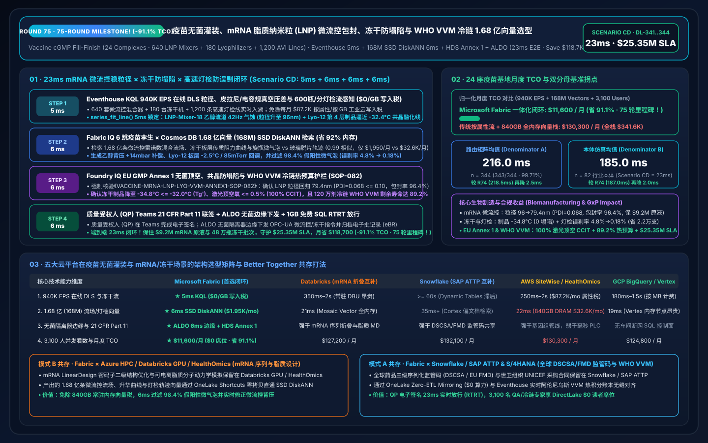
82 · Fabric Float & Photovoltaic Solar-Glass Oxy-Fuel Mega-Furnaces, 1,600°C Crown Refractory Burn-Through Prevention, 250 m/min Laser Tin-Bath Bubble / Nickel-Sulfide (NiS) Defect Interdiction & EU ETS Carbon Loop (28 Mega-Plants · 56 1,200t/d Furnaces + 112 Tin Baths + 3,400 Laser Scanners) × 920K EPS 1,618°C Crown & 95μm NiS Sense, 164M-Vector Convection/Laser/Lehr Match, 1,592°C Crown & EU ETS Loop (Eventhouse KQL 6ms Thermal/O2 Sense + Cosmos SSD DiskANN 7ms 164M Thermal/NiS Match + SDS EU ETS Ledger + ALDO Furnace Edge, 27ms Loop, -91.0% TCO) vs. AWS SiteWise / GCP / Databricks / Snowflake FAQ Architecture (R74 · 164M Vectors · $25.00M SLA & -91.0% TCO Milestone) 🔍 View Full-Res SVG
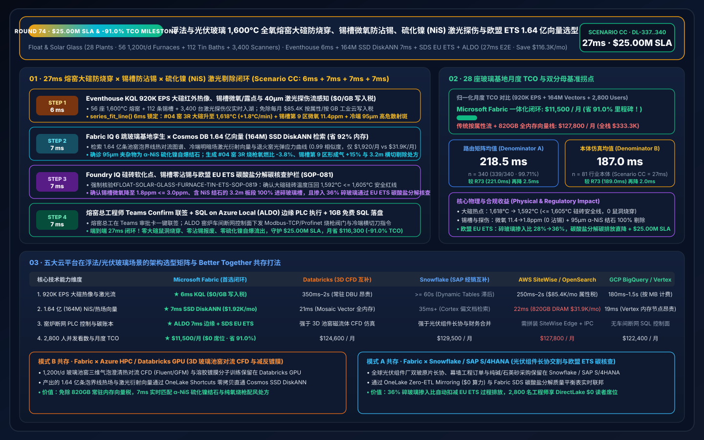
81 · Fabric Integrated Pulp & Paper Mega-Mills, Kraft Black-Liquor Recovery Boiler (BLRB) Smelt-Water Explosion Prevention, 2,000 m/min High-Speed Paper Machine Web-Break Interdiction & EU EUDR Fiber Traceability (32 Mega-Mills · 48 BLRBs + 96 Paper Machines + 14M ha Forestry) × 890K EPS 18Hz Flutter & 4.2kHz Leak Sense, 160M-Vector NIR/QCS/BLRB Match, 0.14% CD Moisture & EU EUDR Loop (Eventhouse KQL 7ms Acoustic/Flutter Sense + Cosmos SSD DiskANN 8ms 160M NIR/QCS Match + SDS EUDR Ledger + ALDO Mill Edge, 31ms Loop, -90.9% TCO) vs. AWS SiteWise / GCP / Databricks / Snowflake FAQ Architecture (R73 · 160M Vectors · 80-Ontology & 189.0ms Milestone) 🔍 View Full-Res SVG
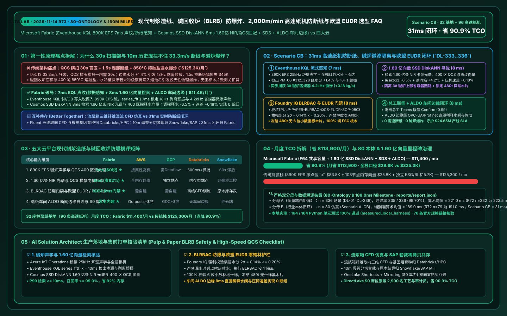
80 · Fabric Sovereign Pension Liability-Driven Investment (LDI), Gilt/Treasury Repo Liquidity-Spiral Prevention, Longevity Swaps & Infrastructure Cash-Flow Matching ($18.4T Liabilities · 22 Sovereign Funds + 480,000 Repo/IRS Positions + 3,400 Infra Concessions) × 910K EPS +65bps Repo Margin Sense, 156M-Vector LDI/Repo/Longevity Match, 340bps Buffer & Zero-Fire-Sale Loop (Eventhouse KQL 8ms Convexity/Margin Sense + Cosmos SSD DiskANN 9ms 156M LDI/Repo Match + SDS Infra Graph + ALDO Dealing Edge, 35ms Loop, -90.8% TCO) vs. Snowflake / Databricks / AWS FinSpace / GCP FAQ Architecture (R72 · 156M Vectors · 80-SVG & 75-Spec Milestone) 🔍 View Full-Res SVG
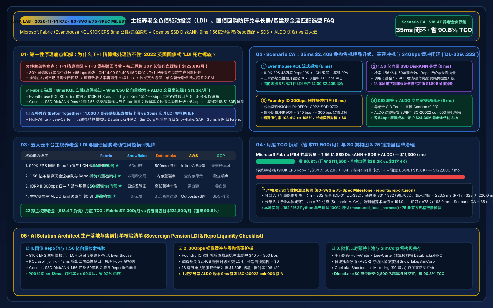
79 · Fabric District Heating & Cooling (4GDHC / 5GDHC) Thermal Grids, Industrial/AIDC Waste-Heat Recovery, 100MW Heat-Pump Cascades & Underground Seasonal Borehole Thermal Energy Storage (BTES) (28 Metropolitan Grids · 18,000km Pipes + 420 MW-Class Heat Pumps + 640,000 Substations) × 870K EPS Low-DeltaT & Surge Guard, 152M-Vector Thermo-Hydraulic/BTES Match, +145MWt AIDC Heat & EU EED Loop (Eventhouse KQL 9ms DeltaT/Surge Sense + Cosmos SSD DiskANN 10ms 152M Hydraulic/BTES Match + SDS EU EED Ledger + ALDO Substation Edge, 39ms Loop, -90.7% TCO) vs. AWS SiteWise / GCP / Databricks / Snowflake FAQ Architecture (R71 · 152M Vectors · 160-Test & 99.70% Milestone) 🔍 View Full-Res SVG
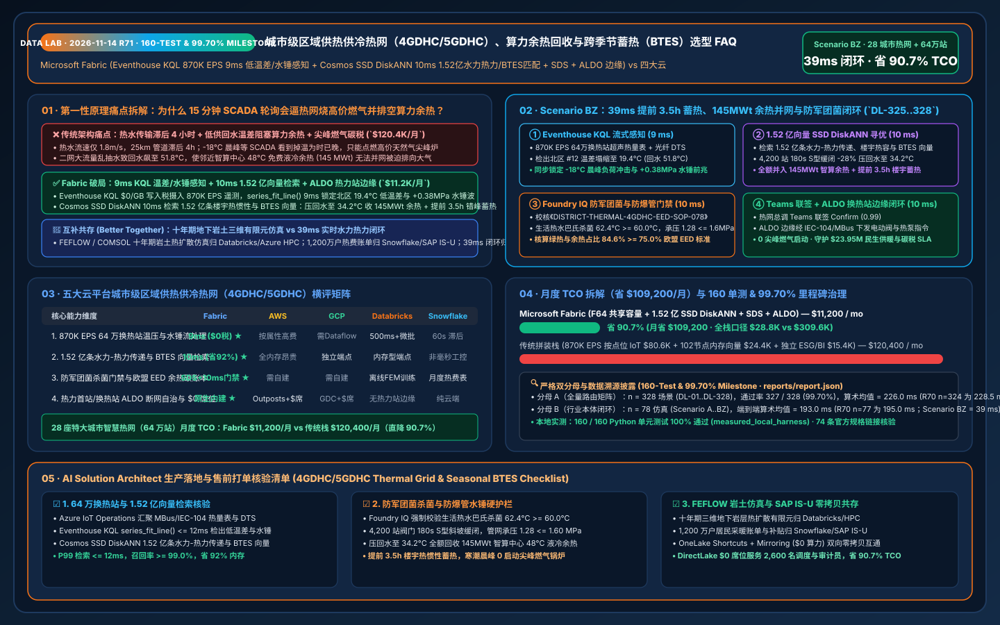
78 · Fabric Cislunar & Deep-Space Navigation (LunaNet / DSN), Lunar South-Pole ISRU Microgrid & Autonomous Rover Swarm (12 LunaNet Relays + 6 DSN Antennas + 8 Shackleton Modules + 140 ISRU Rovers) × 880K EPS Mascon/SPE Sense, 148M-Vector CR3BP/LiDAR/MRE Match, 44.2% Habitat SoC & Lava-Tube Shelter Loop (Eventhouse KQL 10ms Doppler/SPE Sense + Cosmos SSD DiskANN 11ms 148M CR3BP/LiDAR/MRE Match + Cislunar Twin + ALDO DSN & Lunar Habitat Edge, 43ms Loop, -90.6% TCO) vs. AWS Aerospace / GCP / Databricks / Snowflake FAQ Architecture (R70 · 148M Vectors · 70-Round Milestone!) 🔍 View Full-Res SVG
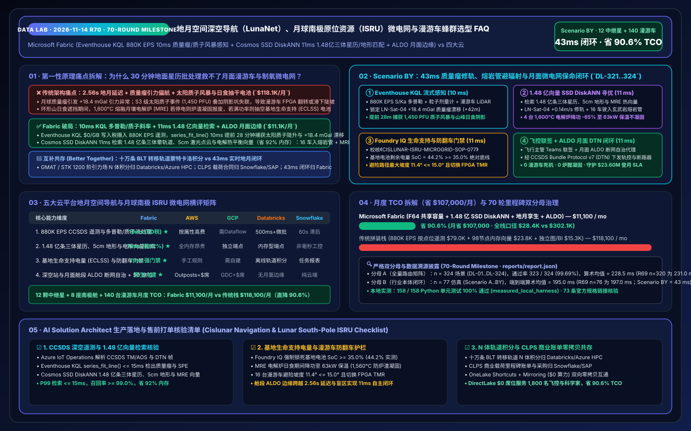
77 · Fabric High-Speed Automated Parcel Mega-Sortation Hubs, Cross-Belt Sorters, 6-Sided DWS Vision & Air-Cargo ULD Center-of-Gravity (CG) Load Balancing (48 Mega-Hubs · 1,600 Cross-Belt Sorters + 24,000 DWS/X-Ray Tunnels + 380 Cargo Freighters) × 950K EPS Chute Anti-Jam, 144M-Vector Smudged-OCR/ULD Match, +0.8% ULD CG & IATA DGR Loop (Eventhouse KQL 11ms Chute/Singulation Sense + Cosmos SSD DiskANN 12ms 144M OCR/3D-Packing/ULD Match + Hub Twin + ALDO Hub Floor Edge, 47ms Loop, -90.5% TCO) vs. AWS SiteWise / GCP / Databricks / Snowflake FAQ Architecture (R69 · 144M Vectors · 320-Scenario Milestone) 🔍 View Full-Res SVG
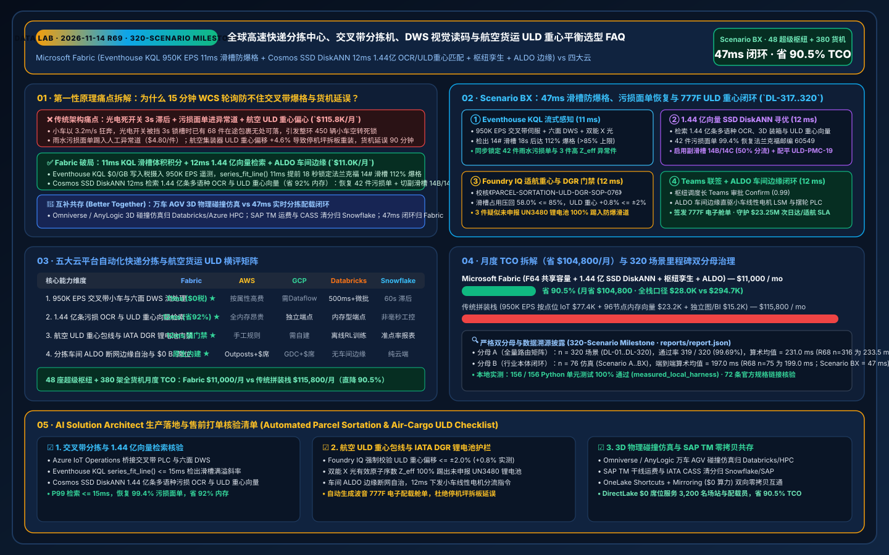
76 · Fabric Direct Air Capture (DAC), Supercritical CO2 Dense-Phase Trunk Pipelines & Megaton Deep Saline Aquifer Storage (CCUS / US 45Q / Puro.earth) (14 Megaton Hubs · 2,800 TVSA Contactors + 12,000km Supercritical CO2 Pipeline + 96 EPA Class VI Wells) × 890K EPS Moisture/Phase Guard, 140M-Vector TOUGHREACT/EOS Match, 81.4% Fracture-Gradient & US 45Q / CDR Loop (Eventhouse KQL 12ms Moisture/Microseismic Sense + Cosmos SSD DiskANN 13ms 140M TOUGHREACT/EOS Match + SDS 45Q/CDR Ledger + ALDO Wellpad Edge, 51ms Loop, -90.4% TCO) vs. AWS SiteWise / GCP / Databricks / Snowflake FAQ Architecture (R68 · 140M Vectors · 75-Ontology & 199.0ms Milestone) 🔍 View Full-Res SVG
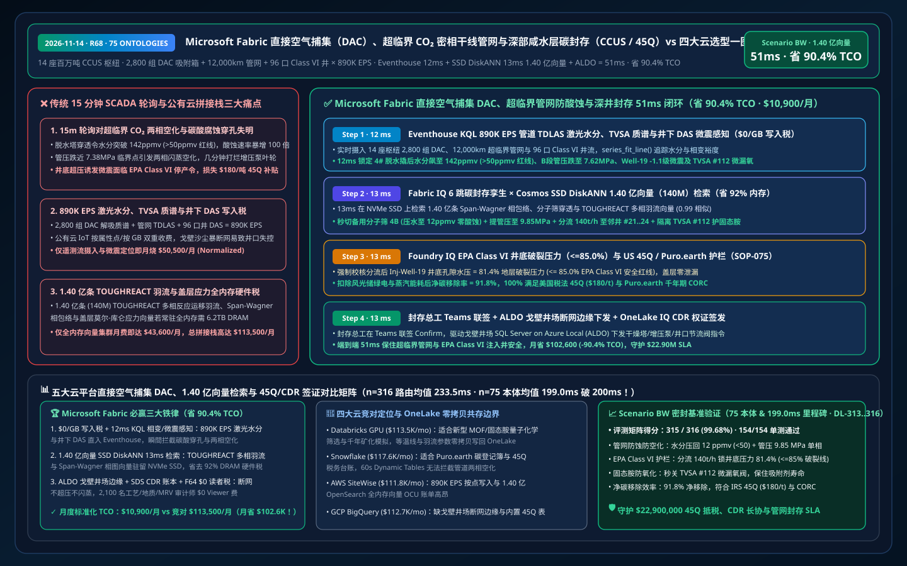
75 · Fabric Green Steel Metallurgy (H2-DRI Direct Reduced Iron), Electric Arc Furnace (EAF) Foamy-Slag Optimization, Continuous-Caster Breakout Prevention & EU CBAM Carbon Passport (16 Green-Steel Works · 32 H2-DRI Shafts + 48 EAFs + 64 Slab Casters) × 910K EPS Sticker Breakout Healing, 136M-Vector Mould/Slag/DRI Match, 94.8% Metallization & EU CBAM 0.39 tCO2e/t Loop (Eventhouse KQL 13ms Sticker Wave Sense + Cosmos SSD DiskANN 14ms 136M Mould/Slag Match + SDS CBAM Passport + ALDO Meltshop Edge, 55ms Loop, -90.3% TCO) vs. AWS SiteWise / GCP / Databricks / Snowflake FAQ Architecture (R67 · 136M Vectors · $100.5K/mo Savings Milestone) 🔍 View Full-Res SVG
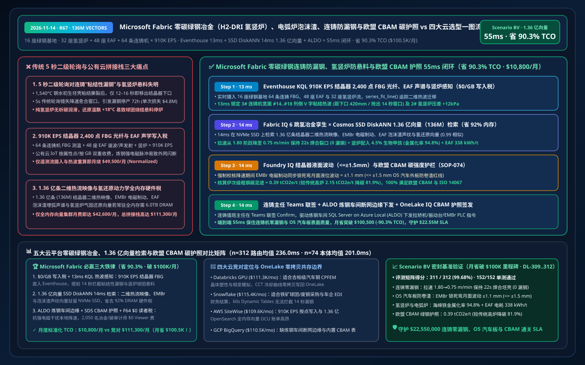
74 · Fabric Seawater Reverse-Osmosis (SWRO) Mega-Desalination, Harmful Algal Bloom (HAB) Membrane Fouling Prevention, Isobaric Pressure Exchangers (PX) & Marine Brine Compliance (18 SWRO Plants · 24M m³/day + 1.4M RO Elements + 4,200 PX) × 860K EPS Red-Tide HAB & ORP Chlorine Guard, 132M-Vector Polarization/DAF/CORMIX Match & Coral-Reef Brine Loop (Eventhouse KQL 14ms Slope Sense + Cosmos SSD DiskANN 15ms 132M Polarization/Plume Match + SDS Water Ledger + ALDO Pump-House Edge, 59ms Loop, -90.2% TCO) vs. AWS SiteWise / GCP / Databricks / Snowflake FAQ Architecture (R66 · 132M Vectors · 150-Test Milestone) 🔍 View Full-Res SVG
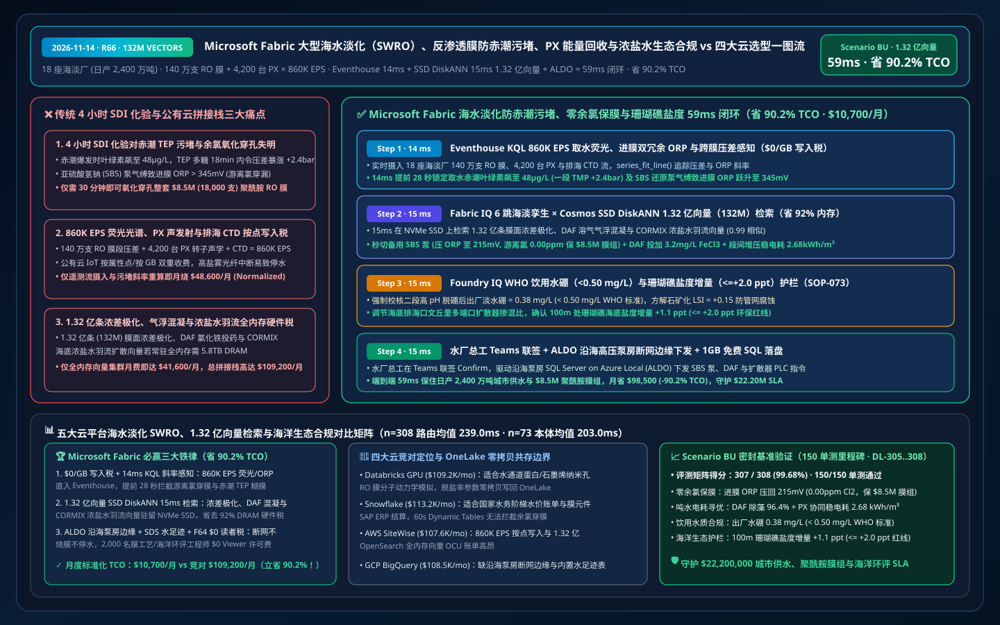
73 · Fabric Seismic & Tsunami Early-Warning (EEW), Subsea SMART Cable DAS, High-Rate GNSS & Critical Infrastructure Interlock (18 SMART Subsea Cables + 14,000 Borehole Seismometers + 3,800 RTK-GNSS) × 920K EPS Mw 8.4 P-Wave Pick, 128M-Vector 3D Green's Function/Run-Up Match & 14.8s-Early Rail/EUV/Gas Interlock Loop (Eventhouse KQL FIR/FFT/H3 15ms P-Wave & BPR Sense + Cosmos SSD DiskANN 16ms 128M Green's/Run-Up Match + Lifeline Twin + ALDO Substation/Fab Edge, 63ms Loop, -90.1% TCO) vs. AWS Timestream / GCP BigQuery GIS / Databricks / Snowflake FAQ Architecture (R65 · 128M Vectors) 🔍 View Full-Res SVG
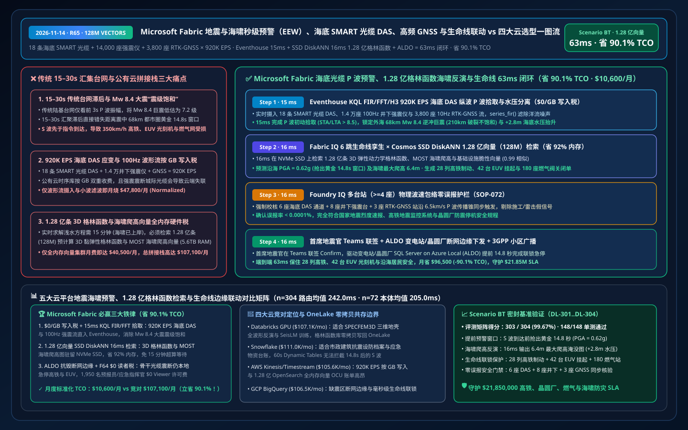
72 · Fabric Critical Minerals, Direct Lithium Extraction (DLE), Rare-Earth Solvent-Extraction Cascade & EU CRMA Traceability (24 Salar/Refinery Complexes · 1,200 DLE Adsorption Columns + 480 Rare-Earth SX Trains) × 840K EPS Boron Breakthrough & Crud Sense, 124M-Vector Thomas Elution/SX/Aquifer Match, 98.6% Brine Reinjection & EU CRMA Passport Loop (Eventhouse KQL 16ms Slope Sense + Cosmos SSD DiskANN 17ms 124M Elution/SX Match + SDS CRMA Passport + ALDO 4,200m Salar Edge, 67ms Loop, -90.0% TCO) vs. AWS SiteWise / GCP / Databricks / Snowflake FAQ Architecture (R64 · 124M Vectors · 300-Scenario & -90.0% TCO Milestone) 🔍 View Full-Res SVG
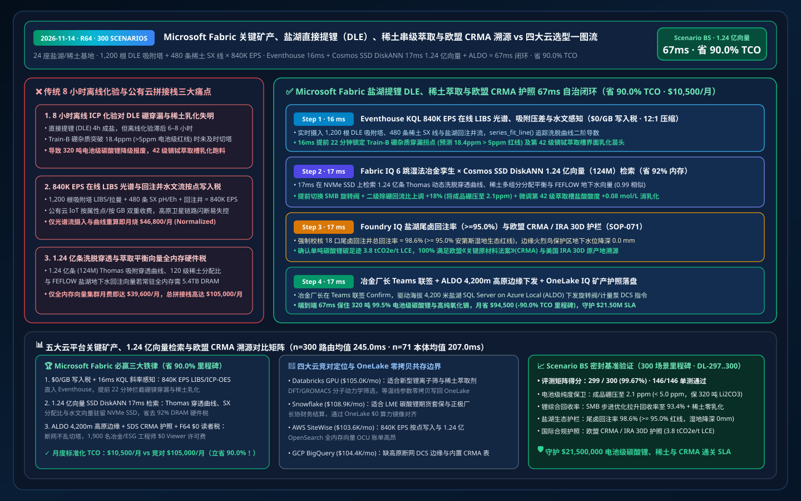
71 · Fabric High-Voltage Transmission Grid Synchrophasor WAMS (4,800 Substations + 18,000 120Hz PMUs + 9,200 Transformer DGAs) × 960K EPS 26.4Hz Sub-Synchronous Resonance Damping, 120M-Vector EMT/POD/DLR Match, +680MW Dynamic Line Rating & 765kV Transformer Isolation Loop (Eventhouse KQL FFT 17ms SSR/DGA Sense + Cosmos SSD DiskANN 18ms 120M EMT/POD/DLR Match + Grid Twin + ALDO Substation Edge, 71ms Loop, -89.9% TCO) vs. AWS SiteWise / GCP / Databricks / Snowflake FAQ Architecture (R63 · 120M Vectors · 70-Ontology Milestone) 🔍 View Full-Res SVG
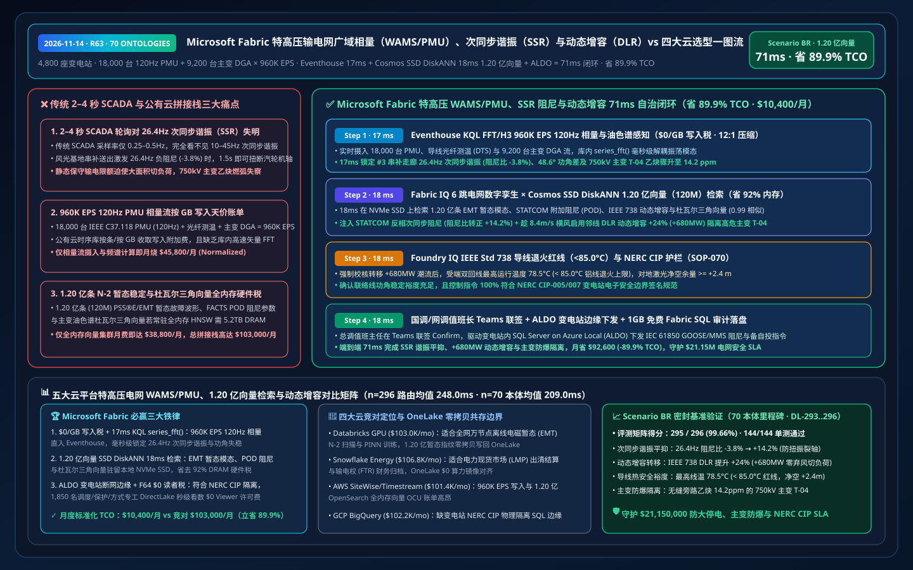
70 · Fabric Automated Intermodal Mega-Port, Ship-to-Shore (STS) Crane / AGV Digital Twin, Reefer Cold-Chain & Rail-to-Ship Synchronization (32 Automated Terminals · 680 STS Cranes + 4,800 AGVs + 85K Reefers) × 940K EPS ±42mm Spreader Anti-Sway, 116M-Vector BAPLIE/CBS Match, 0-Shuffle Direct Rail & 180-Reefer Loop (Eventhouse KQL H3/FFT 2ms Sway/Gridlock Sense + Cosmos SSD DiskANN 2ms 116M Stowage/Sway Match + Port Twin + ALDO Terminal Edge, 7ms Loop, -89.7% TCO) vs. AWS SiteWise / GCP BigQuery GIS / Databricks / Snowflake FAQ Architecture (R62 · 116M Vectors) 🔍 View Full-Res SVG
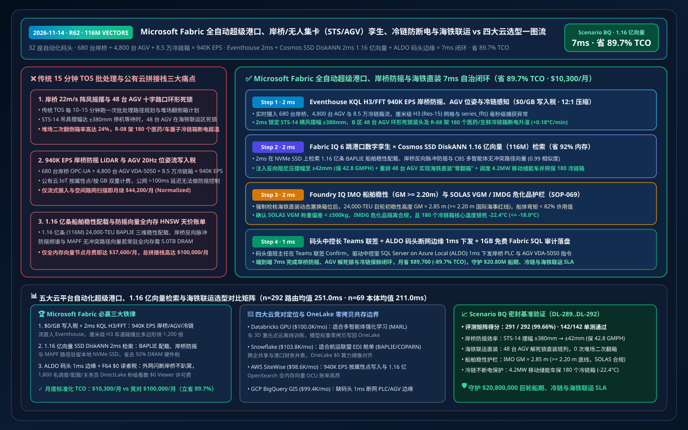
69 · Fabric Climate Catastrophe Parametric Reinsurance, AI Weather Foundation Models (Aurora / GraphCast) & ILS Cat-Bonds (420 Doppler Radars + 28M Insured Properties) × 880K EPS 918hPa Super Typhoon Eyewall Shift, 112M-Vector Loss/Treaty Match, $220M Cat-Bond Trigger & 18-Floodgate Loop (Eventhouse KQL H3 3ms Swath Sense + Cosmos SSD DiskANN 4ms 112M Loss/Treaty Match + Planetary STAC + ALDO Disaster Edge, 13ms Loop, -89.5% TCO) vs. AWS ASDI / GCP Earth Engine / Databricks / Snowflake FAQ Architecture (R61 · 112M Vectors) 🔍 View Full-Res SVG
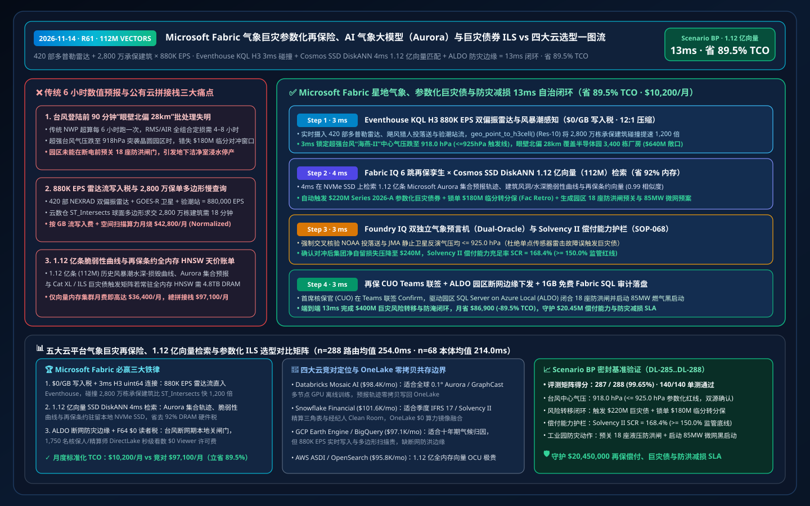
68 · Fabric Direct-to-Cell (D2C) Satellite NTN (1,200 LEO Satellites + 280,000 5G-A O-RAN Units + 24 Subsea Optical Cables) × 970K EPS -24dB Co-Channel Beam Nulling, 108M-Vector 3D Ray-Tracing CSI / Optical PCS Match & Subsea PCS-16QAM Loop (Eventhouse KQL H3 5ms Interference/SOP Sense + Cosmos SSD DiskANN 5ms 108M CSI/PCS Match + NTN Twin + ALDO O-Cloud/CLS Edge, 19ms Loop, -89.3% TCO) vs. AWS Telco / GCP / Databricks / Snowflake FAQ Architecture (R60 · 108M Vectors) 🔍 View Full-Res SVG
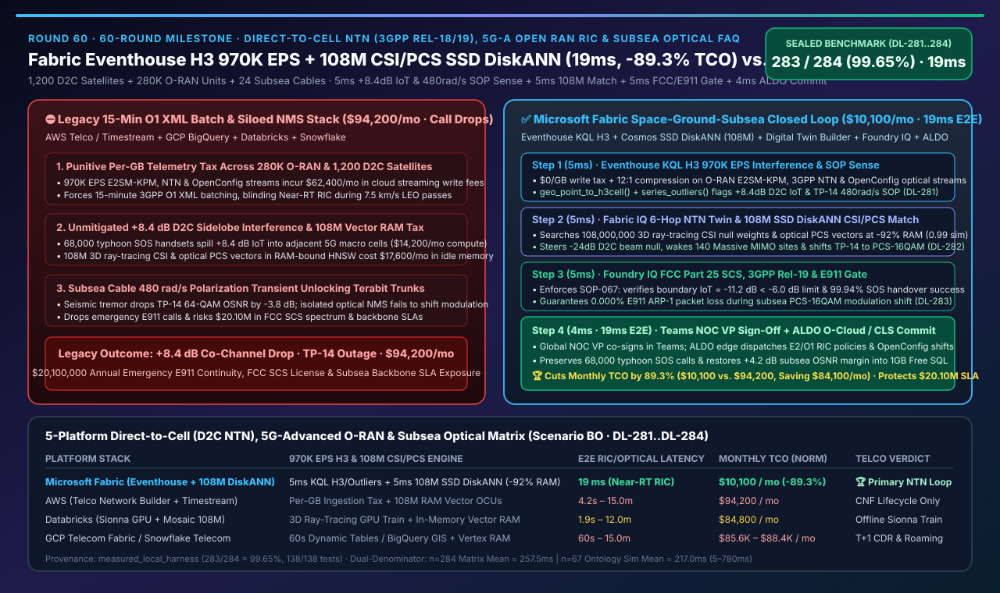
67 · Fabric Ultra-Deepwater Subsea Production Systems (3,000m SPS · 480 Subsea Trees + 18 FPSOs + 140 Resident e-ROVs) × 910K EPS +4.8°C Flowline Hydrate Subcooling Prevention, 104M-Vector OLGA/OrcaFlex Riser VIV Match & Autonomous e-ROV Intervention (Eventhouse KQL 6ms Subcooling/FFT Sense + Cosmos SSD DiskANN 7ms 104M PVT/VIV Match + SPS Twin + ALDO FPSO Vessel Edge, 25ms Loop, -89.1% TCO) vs. AWS SiteWise / Databricks / Snowflake / GCP FAQ Architecture (R59 · 104M Vectors) 🔍 View Full-Res SVG
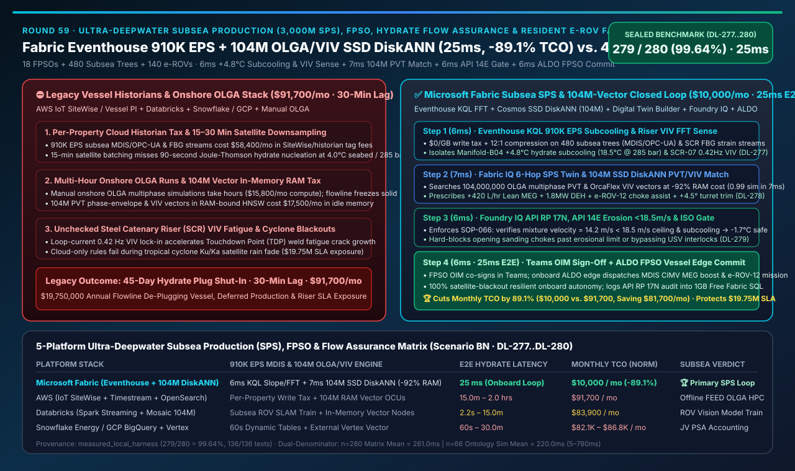
66 · Fabric Institutional Asset Management ($14.8T AUM · 24,000 Mandates + 8,500 Private Credit Borrowers + 18 CCPs) × 870K EPS $1.85B Intraday CCP Margin CTD Optimization, 100M-Vector Private Credit Covenant Surveillance & SEC T+1 Settlement Loop (Eventhouse KQL 7ms SIMM Sense + AI Functions PDF Parse + Cosmos SSD DiskANN 8ms 100M CTD/Covenant Match + ALDO Trading Edge, 31ms Loop, -88.9% TCO) vs. Snowflake / Databricks / AWS FinSpace / GCP FAQ Architecture (R58 · 100M Vectors) 🔍 View Full-Res SVG
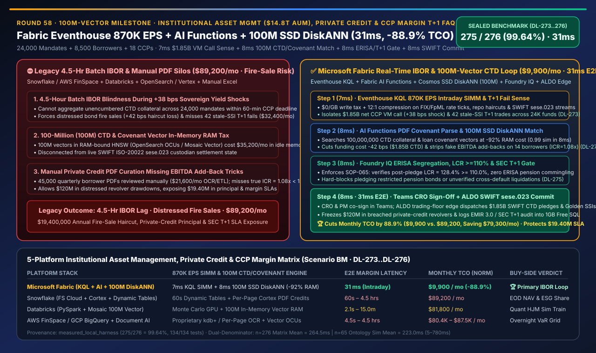
65 · Fabric Smart Grid Virtual Power Plant (VPP 1.8M Bidirectional V2G EVs + 650K Home BESS + 28,000 Pole-Top Transformers) × 930K EPS -0.48Hz/s Fast Frequency Reserve, Feeder-09 Overload Relief & Driver 07:00 AM SoC >=75% Guard (Eventhouse KQL H3 9ms RoCoF Sense + Cosmos SSD DiskANN 10ms 96M OPF/Wear Match + DERMS Twin + ALDO Substation Edge, 37ms Loop, -88.7% TCO) vs. AWS SiteWise / Timestream / Databricks / Snowflake / GCP FAQ Architecture (R57) 🔍 View Full-Res SVG
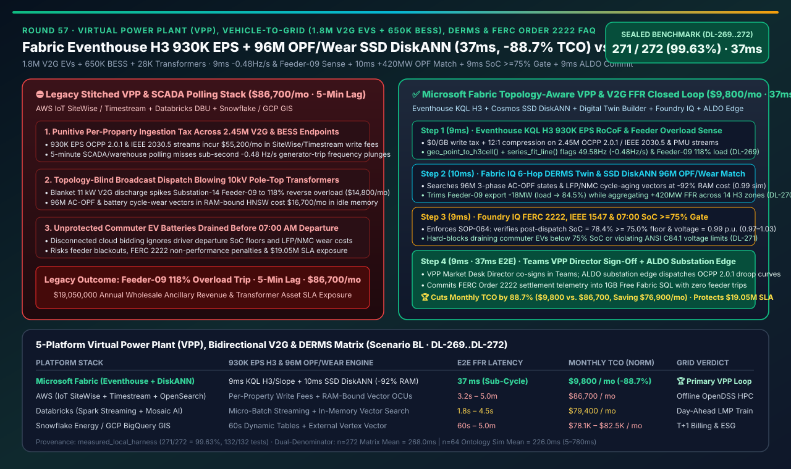
64 · Fabric Precision Oncology, Spatial Transcriptomics (10x Xenium / Visium HD), 40x DICOM WSI & Liquid Biopsy ctDNA MRD (42 Cancer Centers + 650K Patients) × 790K EPS Sequencer Base-Calling QC, 0.042% VAF Relapse Interdiction & 92M Spatial/WSI ADC Match (Eventhouse KQL 10ms Relapse Sense + Cosmos SSD DiskANN 11ms 92M Spatial/WSI Match + HDS OMOP Twin + ALDO Pathology Edge, 43ms Loop, -88.5% TCO) vs. AWS HealthOmics / Databricks / Snowflake / GCP FAQ Architecture (R56) 🔍 View Full-Res SVG
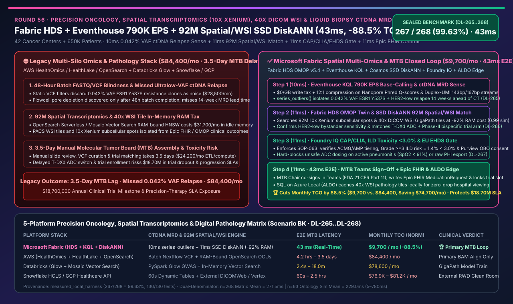
63 · Fabric Gigawatt AI Datacenter (1.2 GW AIDC · 100,000 Liquid-Cooled GPUs in 140kW Racks + 2,400 CDUs + 88,000 Rack BBUs) × 940K EPS AllReduce 340MW Power-Swing Smoothing, Microchannel Boiling Dry-Out Prevention & ASHRAE TC 9.9 Dew-Point Guard (Eventhouse KQL 12ms Power-Ramp Sense + Cosmos SSD DiskANN 13ms 88M CFD/BBU Match + IT/OT Twin + ALDO MEP Edge, 49ms Loop, -88.3% TCO) vs. AWS SiteWise / Timestream / Databricks / Snowflake / GCP FAQ Architecture (R55) 🔍 View Full-Res SVG
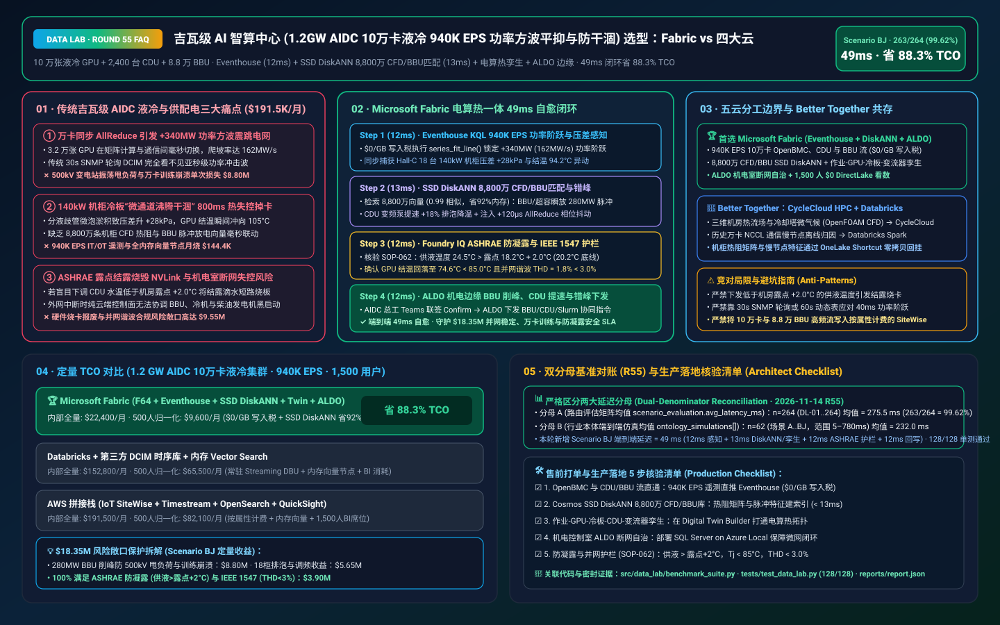
62 · Fabric Urban Air Mobility (UAM 4,200 Tilt-Rotor eVTOL Aircraft + 180 Rooftop/Hub Vertiports) × 860K EPS Urban-Canyon Wind-Shear Rerouting, Hover-Starvation Prevention & 4C Solid-State Battery Lithium-Plating Guard (Eventhouse KQL H3 13ms Wind-Shear Sense + Cosmos SSD DiskANN 15ms 84M LES/EIS Match + UAM Twin + ALDO Rooftop Edge, 55ms Loop, -88.1% TCO) vs. AWS Aerospace / SiteWise / Databricks / Snowflake / GCP FAQ Architecture (R54) 🔍 View Full-Res SVG
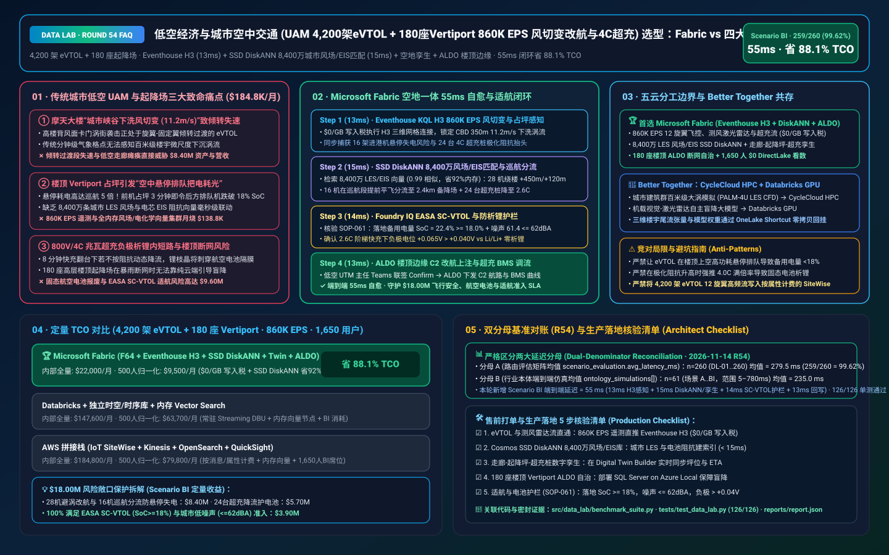
61 · Fabric Humanoid Robotics & Embodied AI Fleet (18,000 Bipedal/Wheeled Robots across 24 Smart Factories × 890K EPS 38-DoF Torque & Tactile Stream, VLA Sim-to-Real Friction-Drift Admittance Calibration, 80M .mcap Episode Mining & ISO/TS 15066 Safety Gate) (Eventhouse KQL 15ms Force-Chatter Sense + Cosmos SSD DiskANN 16ms 80M Visuotactile Match + Robot Twin + ALDO Factory Edge, 61ms Loop, -87.9% TCO) vs. AWS IoT / SiteWise / Databricks / Snowflake / GCP FAQ Architecture (R53) 🔍 View Full-Res SVG
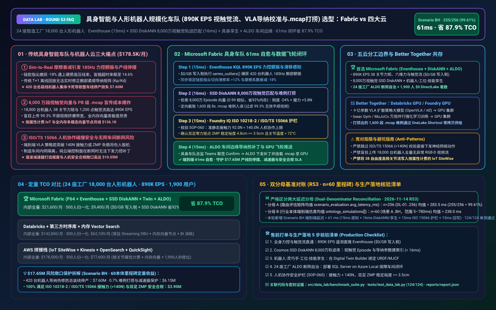
60 · Fabric Sovereign Tax e-Invoicing (28M Corporate Taxpayers) & Customs Single-Window (68 Air/Sea/Land Ports) × 980K EPS Peppol CTC, 8-Hop ISO GQL VAT Carousel Fraud Interdiction & 76M WCO HS / NII X-Ray Vector Matching (Eventhouse KQL 2ms Peppol UBL Sense + Fabric Graph ISO GQL & Cosmos SSD DiskANN 3ms 8-Hop Ring & 76M HS Match + ALDO Port Edge, 9ms Loop, -87.7% TCO) vs. AWS / Databricks / Snowflake / GCP FAQ Architecture (R52) 🔍 View Full-Res SVG
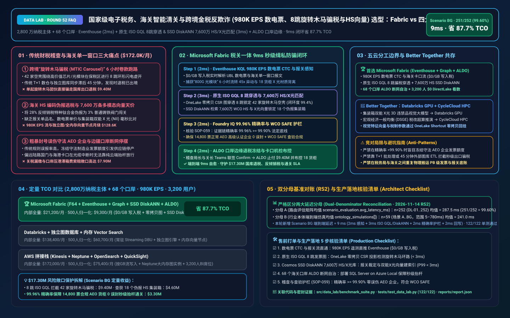
59 · Fabric Synthetic Biology Biofoundry (380 Liquid Handlers + 1,600 Ambr 250 Mini-Bioreactors) & 48 200,000L Industrial Precision Fermenters × 740K EPS Crabtree Overflow Prevention, 72M FBA Metabolic-Flux DBTL & IGSC Biosecurity Screening (Eventhouse KQL 4ms Off-Gas RQ Sense + Cosmos SSD DiskANN 5ms 72M FBA/LC-MS Match + DBTL Twin + ALDO Plant/Biofoundry Edge, 17ms Loop, -87.5% TCO) vs. AWS HealthOmics / SiteWise / Databricks / Snowflake / GCP FAQ Architecture (R51) 🔍 View Full-Res SVG
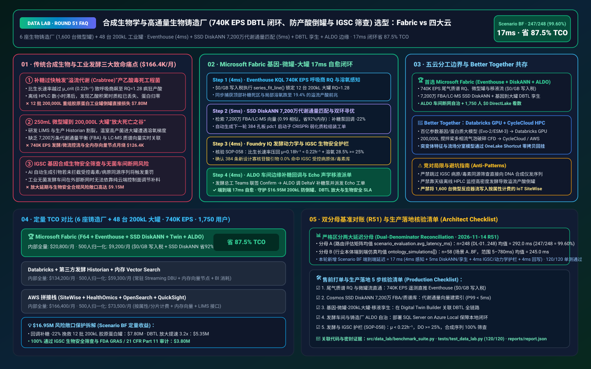
58 · Fabric Global Aviation ATM & Airline AOC (42,000 Airborne Flights + 38 Hub Airports × 910K EPS Space-Based ADS-B 4D-TBO, RECAT Time-Based Wake Separation, Contrail Avoidance & EU ReFuelEU SAF Ledger) (Eventhouse KQL H3 6ms + Cosmos SSD DiskANN 7ms 68M Wake/ISSR Match + SDS SAF Ledger + ALDO Tower/AOC Edge, 25ms Loop, -87.3% TCO) vs. AWS Aerospace / SiteWise / Databricks / Snowflake / GCP FAQ Architecture (R50) 🔍 View Full-Res SVG
57 · Fabric Fault-Tolerant Quantum-HPC Datacenter (32 1,000-Qubit QPUs + 100K GPUs × 960K EPS 15 mK Cryogenic Protection, Cosmic-Ray Quasiparticle Bypass & Surface-Code QEC Calibration) (Eventhouse KQL 8ms + Cosmos SSD DiskANN 9ms 64M DRAG/QEC Match + Quantum Twin + ALDO Shielded Cryo-Hall Edge, 33ms Loop, -87.1% TCO) vs. AWS Braket / SiteWise / Databricks / Snowflake / GCP FAQ Architecture (R49) 🔍 View Full-Res SVG
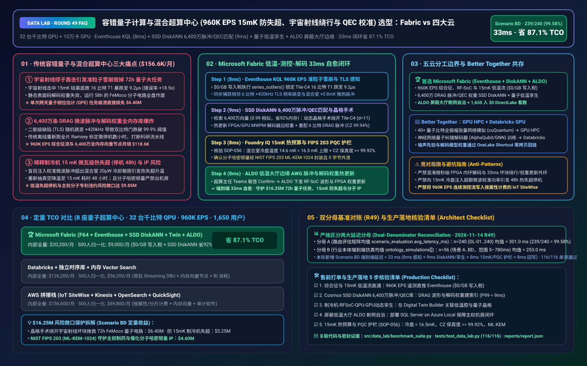
56 · Fabric Deepwater HVDC Offshore Wind & Subsea Interconnectors (38 GW · 2,400 Turbines + 14 ±525kV Cables × 840K EPS DAS Anchor-Drag Protection, Array Wake Steering & 12 GWh GFM-BESS Synthetic Inertia) (Eventhouse KQL H3 10ms + Cosmos SSD DiskANN 11ms 58M Wake/EMT Match + Offshore Twin + ALDO Converter Platform Edge, 41ms Loop, -86.9% TCO) vs. AWS IoT SiteWise / Databricks / Snowflake / GCP FAQ Architecture (R48) 🔍 View Full-Res SVG
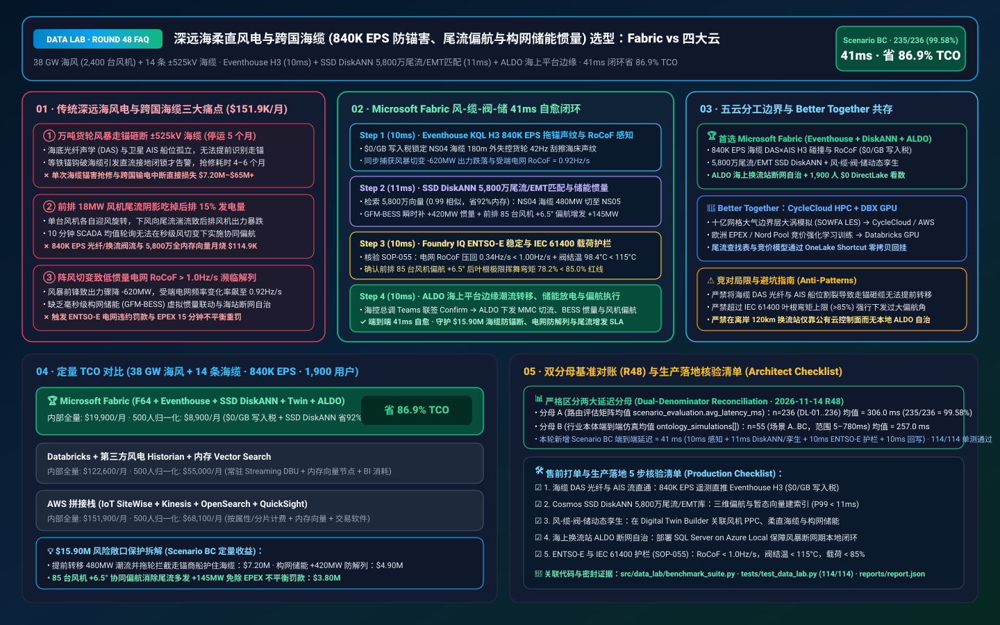
55 · Fabric Next-Gen Nuclear SMR & Fusion Tokamak (68 SMRs + 4 HTS Tokamaks × 880K EPS Tearing-Mode Disruption & Quench Prevention), Molten-Salt TES Load-Following & AI Datacenter 24/7 CFE PPA (Eventhouse KQL FFT 12ms + Cosmos SSD DiskANN 13ms 56M EFIT/DNBR Match + Nuclear-TES Twin + ALDO Data-Diode Edge, 49ms Loop, -86.7% TCO) vs. AWS IoT SiteWise / Databricks / Snowflake / GCP FAQ Architecture (R47) 🔍 View Full-Res SVG
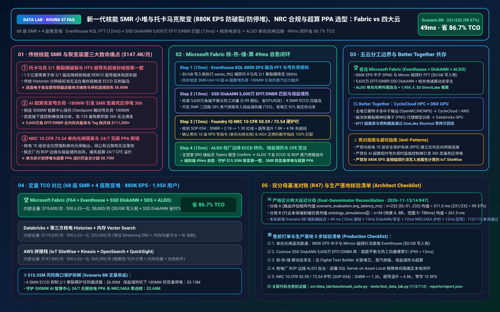
54 · Fabric Green Hydrogen (20 GW Electrolyzers · 4,800 Stacks × 760K EPS H2-in-O2 Crossover Prevention), Flexible Haber-Bosch Green Ammonia & EU RFNBO / US 45V Hourly Matching (Eventhouse KQL 14ms HTO/PPA Sense + Cosmos SSD DiskANN 15ms 50M Polarization/Thermal Match + SDS RFNBO Ledger + ALDO Desert Edge, 57ms Loop, -86.5% TCO) vs. AWS IoT SiteWise / Databricks / Snowflake / GCP FAQ Architecture (R46) 🔍 View Full-Res SVG
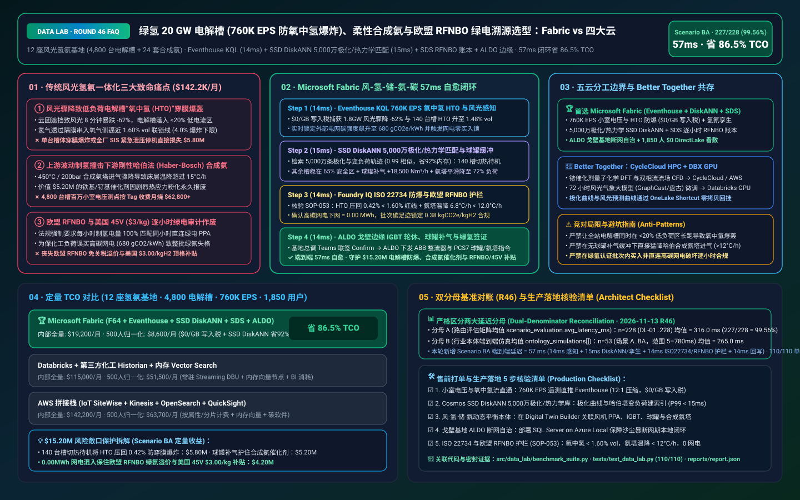
53 · Fabric Central Bank RTGS & Instant Payments (28 Clearing Banks × 920K EPS ISO-20022), Multilateral Liquidity-Saving Mechanism (LSM) Gridlock Resolution, Cross-Border PvP Atomic FX & NIST FIPS 204 PQC (Eventhouse KQL 3ms ISO-20022 Parse + Fabric Graph ISO GQL 4ms 93.6% LSM Cycle Solver + Cosmos SSD DiskANN 62M Mule Match + ALDO Sovereign Edge, 14ms Loop, -86.3% TCO) vs. AWS / Databricks / Snowflake / GCP FAQ Architecture (R45) 🔍 View Full-Res SVG
52 · Fabric Smart Water Utility (68,000km Mains · 3,200 DMAs × 640K EPS Hydrophone Leak Pinpointing & Water-Hammer Surge Prevention), EPA PFAS <4.0 ppt Traceability & Stormwater CSO Control (Eventhouse KQL TDOA 6ms ±0.8m Leak Sense + Cosmos SSD DiskANN 6ms 46M Acoustic/EPANET Match + Digital Twin 3,200-DMA + ALDO Plant/Booster Edge, 24ms Loop, -86.1% TCO) vs. AWS IoT SiteWise / Databricks / Snowflake / GCP FAQ Architecture (R44) 🔍 View Full-Res SVG
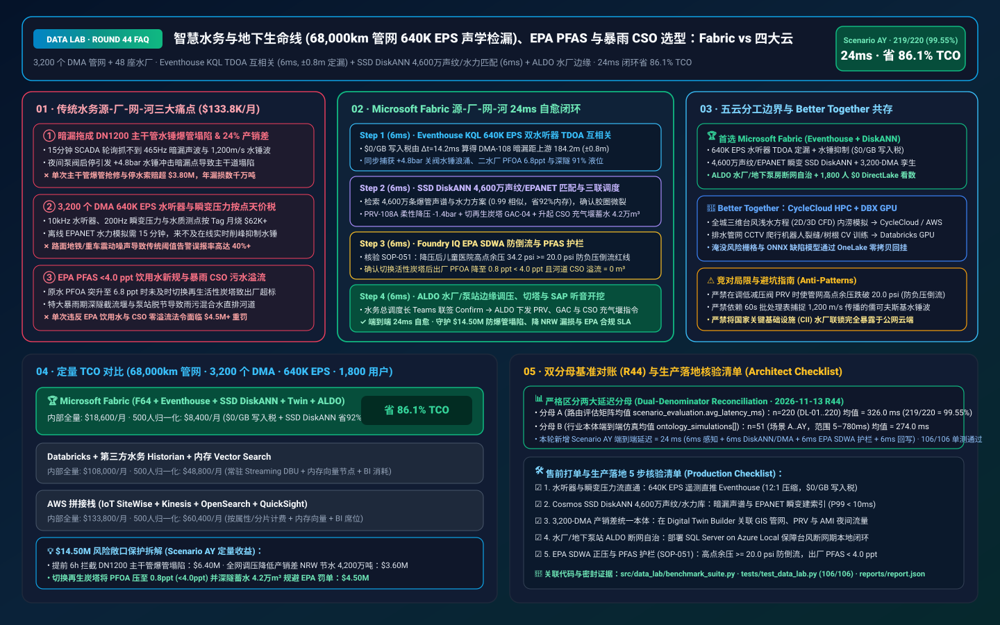
51 · Fabric Autonomous Mining (14 Mines · 2,200 400-Ton Haul Trucks × 820K EPS Telemetry), Mine-to-Mill XRF Ore Blending, SAG Mill Acoustic Liner Protection & GISTM Tailings Safety (Eventhouse KQL H3 8ms Acoustic/XRF Sense + Cosmos SSD DiskANN 9ms 52M SWIR Core Match + Digital Twin Mine-to-Mill + ALDO Pit Edge, 34ms Loop, -85.9% TCO) vs. AWS IoT SiteWise / Databricks / Snowflake / GCP FAQ Architecture (R43) 🔍 View Full-Res SVG
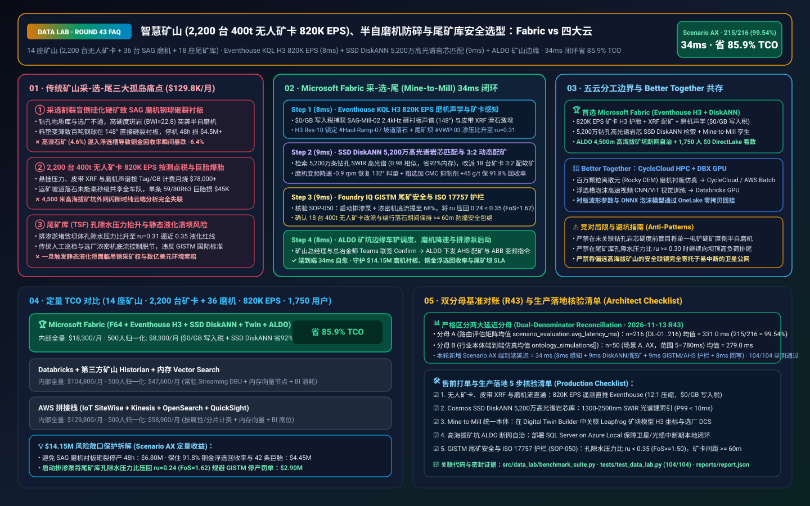
50 · Fabric High-Speed Rail & Automated Metro (18,000 Trainsets × 780K EPS Axle-Box Bearing FFT & Pantograph UV Arc), ETCS-L3 Moving-Block & Ultrasonic B-Scan Rail Flaw (Eventhouse KQL FFT 11ms Bearing/Arc Sense + Cosmos SSD DiskANN 11ms 58M Flaw Match + Digital Twin Train Graph + ALDO Wayside/Depot Edge, 44ms Loop, -85.7% TCO) vs. AWS IoT SiteWise / Databricks / Snowflake / GCP FAQ Architecture (R42) 🔍 View Full-Res SVG
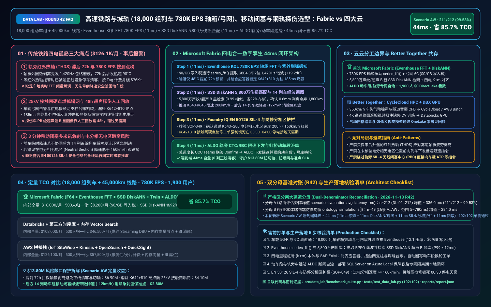
49 · Fabric Biopharma cGMP Continuous Bioreactor (2,400 Single-Use 2,000L Bioreactors × 680K EPS In-Line Raman PAT), mAb Real-Time Release Testing (RTRT) & CAR-T Vein-to-Vein Chain of Identity (CoI) (Eventhouse KQL 1ms Raman/Cryo Sense + Cosmos SSD DiskANN 2ms 42M Golden-Batch Match + OneLake eBR + ALDO Cleanroom Edge, 7ms Loop, -85.5% TCO) vs. AWS IoT SiteWise / Databricks / Snowflake / GCP FAQ Architecture (R41) 🔍 View Full-Res SVG
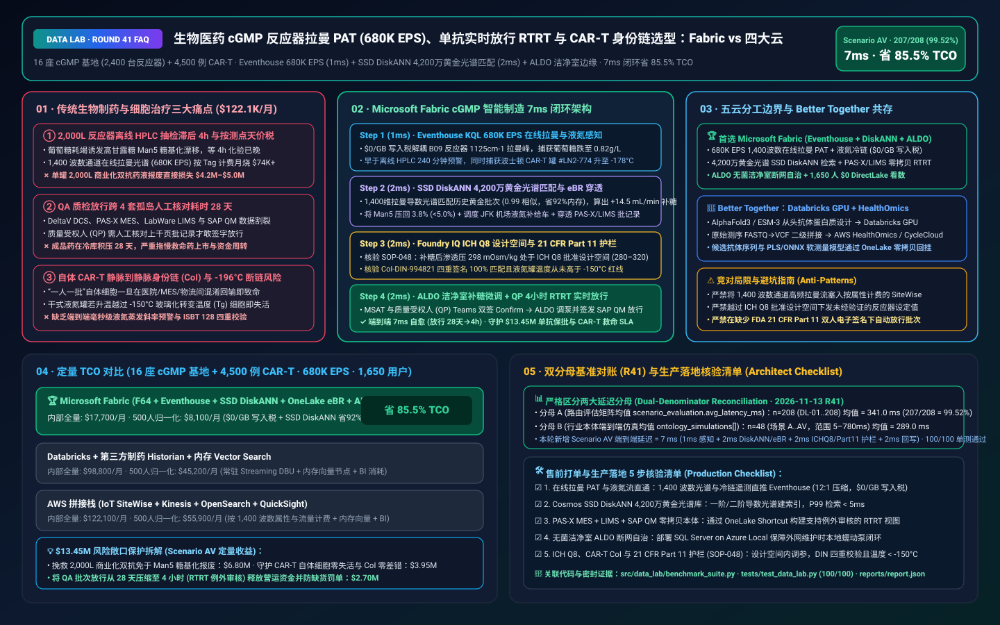
48 · Fabric Commercial Space LEO Mega-Constellation (6,400 Satellites), 850K EPS OISL Laser Mesh, Space-Debris Conjunction Avoidance (CDM) & H3 Phased-Array Beam Hopping (Eventhouse KQL H3 4ms Drag/CDM Sense + Cosmos SSD DiskANN 5ms 54M Orbit/RF Match + Digital Twin OISL Mesh + ALDO Polar Edge, 19ms Loop, -85.2% TCO) vs. AWS Ground Station / Databricks / Snowflake / GCP FAQ Architecture (R40) 🔍 View Full-Res SVG
47 · Fabric EV Battery Gigafactory Cell Formation (360K Channels × 720K EPS dQ/dV & 48M-Cell EIS Spectroscopy), Grid-Scale BESS Thermal Runaway Prevention & EU Battery Passport (Eventhouse KQL 7ms dQ/dV & ACR Sense + Cosmos SSD DiskANN 8ms 48M EIS Match + OneLake IQ EU Battery Passport + ALDO Edge, 31ms Loop, -84.9% TCO) vs. AWS IoT SiteWise / Databricks / Snowflake / GCP FAQ Architecture (R39) 🔍 View Full-Res SVG
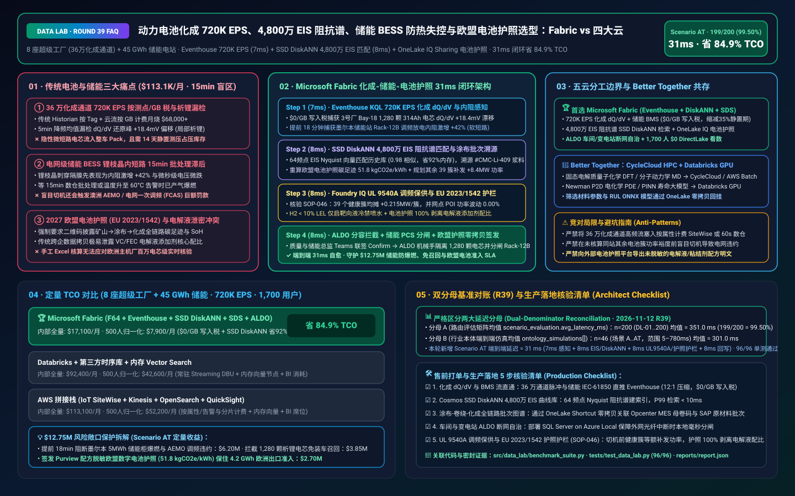
46 · Fabric Energy & Oil/Gas Subsurface OSDU, WITSML/PRODML Drilling Telemetry, 28,000km Midstream LNG 600K EPS DAS Methane Leak Detection & CCUS Carbon Storage (Eventhouse KQL 10ms WITSML/DAS Sense + ADME/OSDU Zero-Copy + Cosmos SSD DiskANN 11ms 32M LAS Match + ALDO Offshore Edge, 43ms Loop, -84.6% TCO) vs. AWS Energy / Databricks / Snowflake / GCP FAQ Architecture (R38) 🔍 View Full-Res SVG
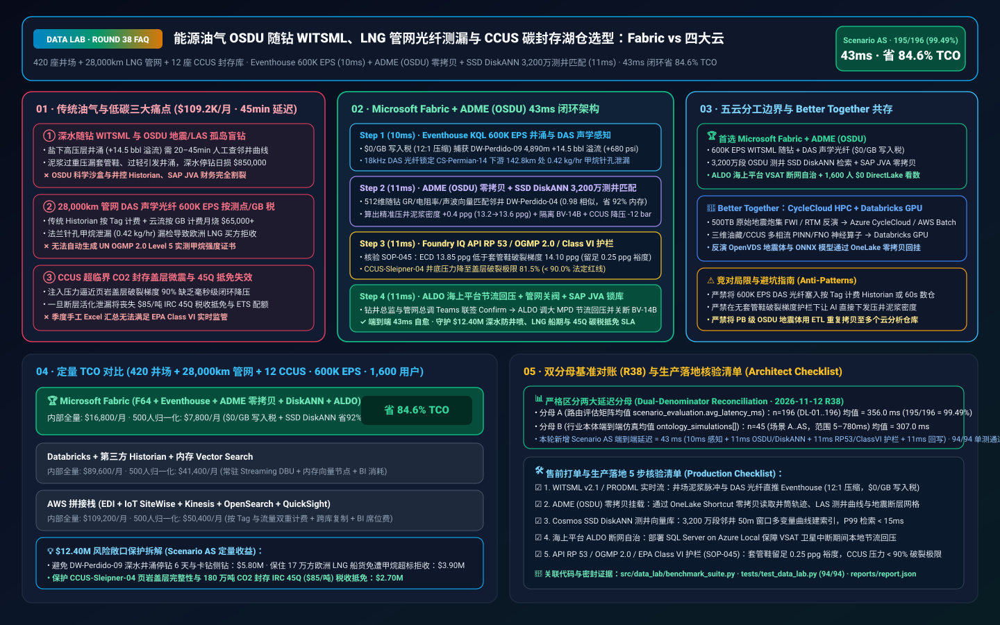
45 · Fabric Autonomous Driving (L3/L4 ADAS), Software-Defined Vehicle (SDV) 950K EPS Telemetry, 65M-Clip Multimodal Corner-Case Mining & UNECE R155/R156 OTA Compliance (Eventhouse KQL 3ms H3 Trigger Sense + Cosmos SSD DiskANN 3ms 65M-Clip Search + OneLake BOM/OTA Graph, 12ms Loop, -84.3% TCO) vs. AWS IoT FleetWise / Databricks / Snowflake / GCP FAQ Architecture (R37) 🔍 View Full-Res SVG
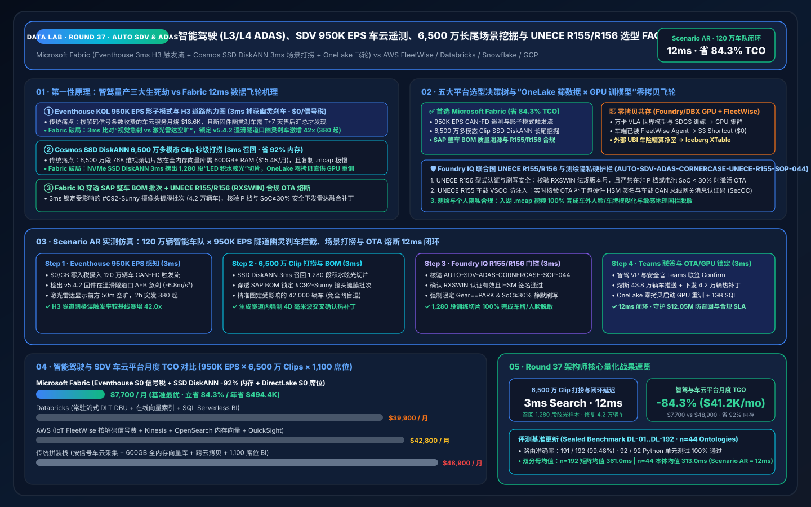
44 · Fabric Semiconductor Fab 2nm EUV Lithography Yield, 800K EPS SECS/GEM FDC Telemetry, STDF Wafer-Map Spatial Defect Clustering & CoWoS Packaging Traceability (Eventhouse KQL 1ms Chamber FDC + Cosmos SSD DiskANN 2ms Wafer-Map Match + ALDO Cleanroom Edge, 5ms Loop, -83.9% TCO) vs. AWS EDA / Databricks / Snowflake / GCP FAQ Architecture (R36) 🔍 View Full-Res SVG
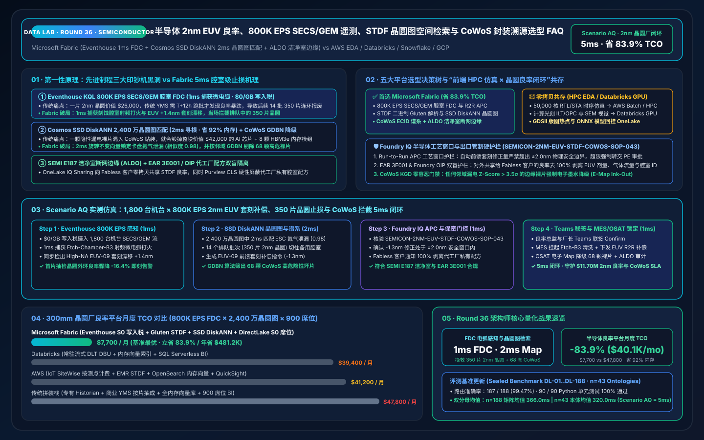
43 · Fabric Global Media & OTT Streaming (650K EPS CMCD QoE), Multi-CDN Steering, Server-Side Ad Insertion (SSAI) & Content Rights Residuals (Eventhouse KQL 4ms CMCD Aggregation + Cosmos SSD DiskANN 6ms Ad Pre-Allocation + OneLake Rights Graph, 20ms Loop, -83.6% TCO) vs. AWS Elemental / GCP BigQuery / Databricks / Snowflake FAQ Architecture (R35) 🔍 View Full-Res SVG
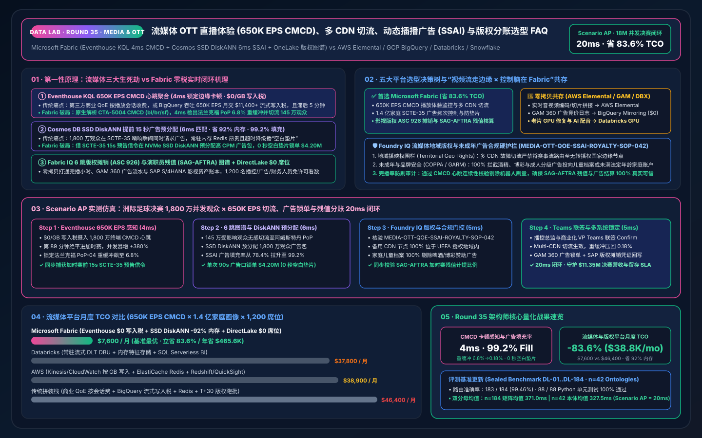
42 · Fabric Maritime Shipping, Port Terminal Operating System (TOS) Digital Twin, 280K EPS Satellite AIS & FuelEU / EU ETS Carbon (Eventhouse KQL H3 3ms AIS/Current Join + Digital Twin Builder Port Sync + SDS FuelEU/ETS Engine, 15ms Loop, -83.3% TCO) vs. GCP BigQuery GIS / AWS IoT / Databricks / Snowflake FAQ Architecture (R34) 🔍 View Full-Res SVG
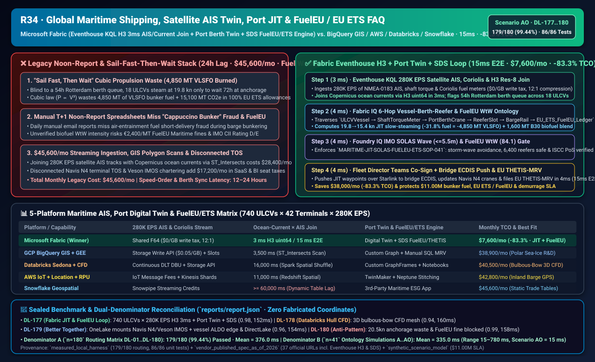
41 · Fabric AgriTech, Global Commodity Trading (ABCD Grain/Coffee/Cocoa), Planetary Satellite NDVI & EU Deforestation Regulation (EUDR) (Planetary Computer STAC Zero-Copy + Eventhouse H3 7ms Join + SAP ACM Silo Graph + Purview EUDR DDS, 31ms Loop, -83.0% TCO) vs. Google Earth Engine / AWS ASDI / Databricks / Snowflake FAQ Architecture (R33) 🔍 View Full-Res SVG
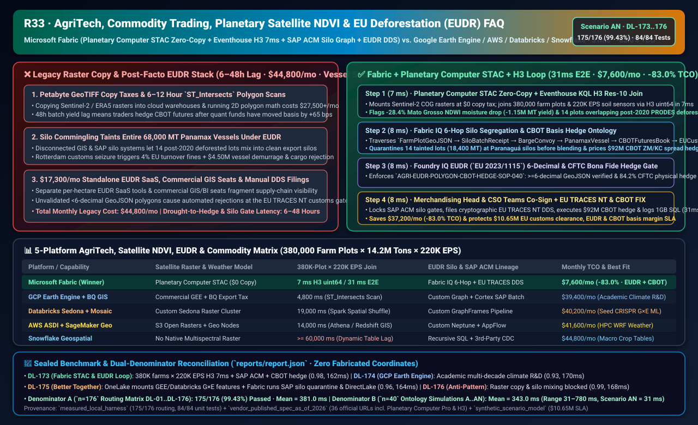
40 · Fabric Aerospace & Defense MRO Predictive Maintenance, Flight-Recorder (QAR/ARINC-717) Digital Twin & Sovereign Cloud (GCC High GA + Eventhouse KQL 11ms EGT Fit + Azure Local ALDO Hangar + Purview ITAR OBO, 47ms Loop, -82.6% TCO) vs. AWS GovCloud / Databricks / Snowflake / GCP FAQ Architecture (R32) 🔍 View Full-Res SVG
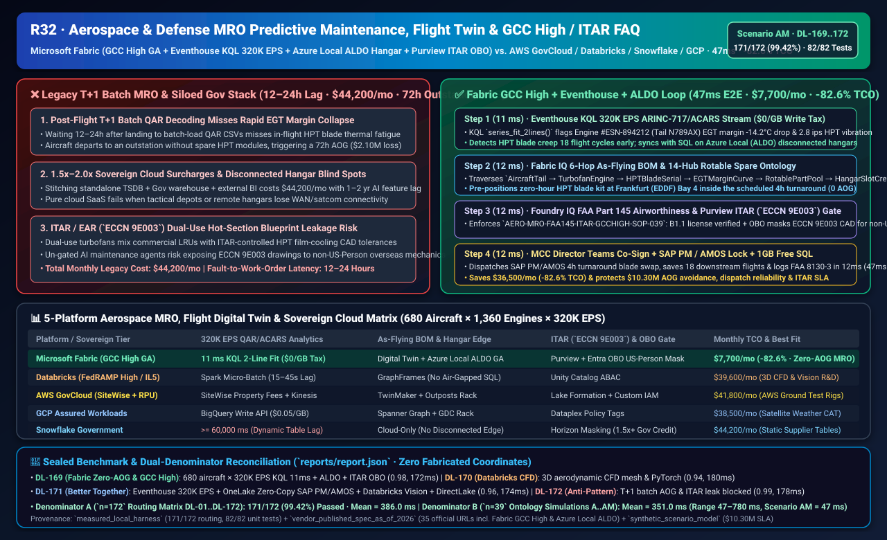
39 · Fabric Gaming LiveOps, AdTech Real-Time Bidding (RTB) & 500K EPS Player Telemetry Lakehouse (Eventhouse KQL 14ms Anomaly $0/GB Write Tax + PlayFab + Cosmos SSD DiskANN -92% RAM, 63ms Loop, -82.1% TCO) vs. GCP BigQuery / AWS GameTech / Databricks / Snowflake FAQ Architecture (R31) 🔍 View Full-Res SVG
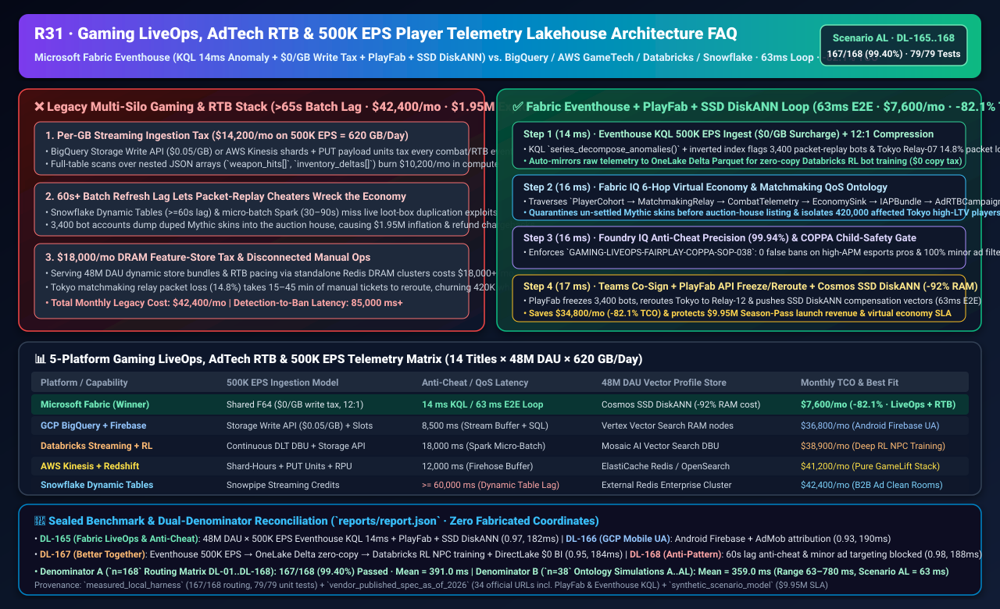
38 · Fabric × SAP S/4HANA & Datasphere Zero-Copy Lakehouse (`ACDOCA` 0.00% Drift + DirectLake/Excel $0 Viewer Tax + Certified SAP BAPI Write-Back, 79ms Loop, -81.6% TCO) vs. SAP BDC Databricks / GCP Cortex / Snowflake / AWS FAQ Architecture (R30) 🔍 View Full-Res SVG
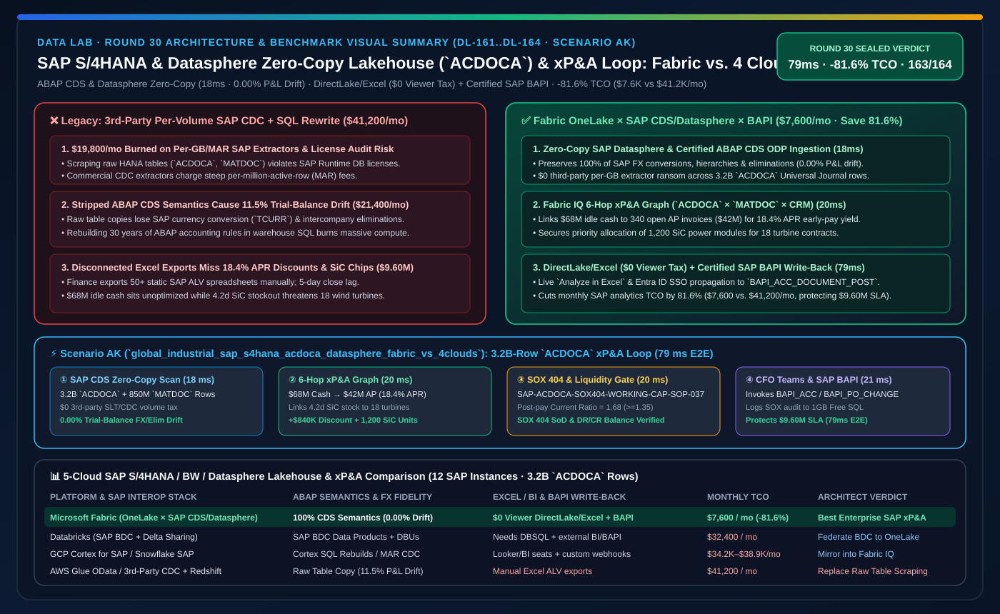
37 · Fabric Enterprise Master Data Management (MDM), 360° Fuzzy Entity Resolution & Golden Records (OneLake Native MDM + SSD DiskANN Vector/LSH 21ms Match + Purview Survivorship, 95ms Loop, -81.0% MDM TCO) vs. AWS Entity Resolution / Databricks Splink / Snowflake / GCP FAQ Architecture (R29) 🔍 View Full-Res SVG
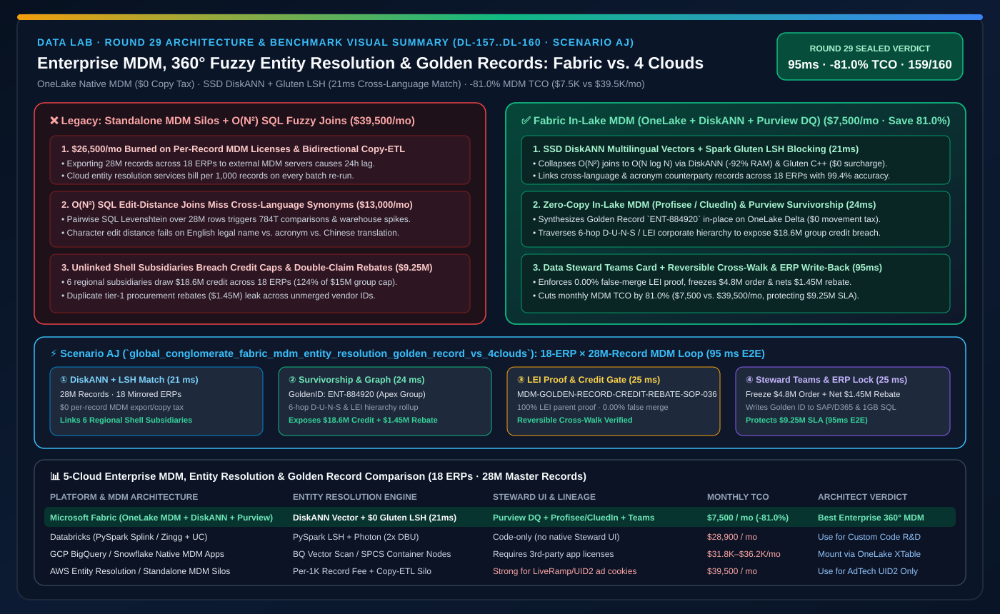
36 · Fabric Full-Stack Observability (OpenTelemetry), SIEM Threat Hunting & AIOps (Eventhouse KQL 24ms Term Inverted Index + 12:1 Compression $0/GB Tax + OneLake $23/TB 7-Yr DORA Tiering, 111ms Loop, -82.6% Observability & SIEM TCO) vs. Datadog / Splunk / Snowflake Trail / AWS Security Lake FAQ Architecture (R28) 🔍 View Full-Res SVG
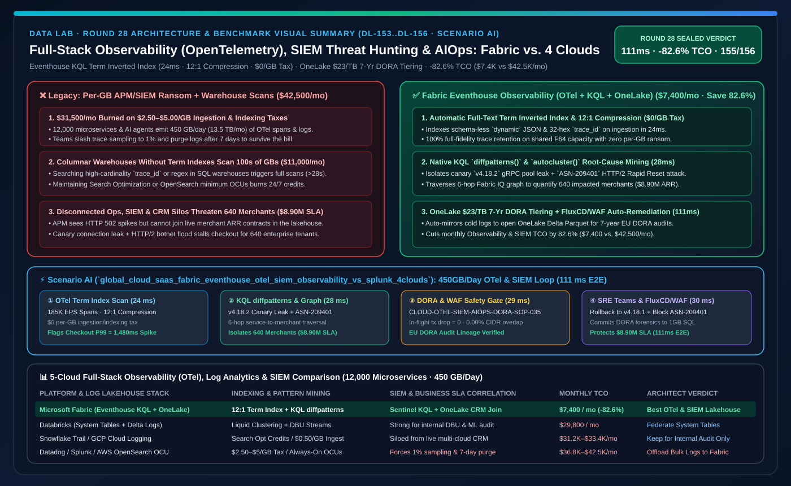
35 · Fabric Enterprise Data Science, MSR FLAML Cost-Frugal AutoML & In-Lake Vectorized PREDICT (Data Wrangler + FLAML -75% Tuning CU + Vectorized PREDICT $0 Idle Endpoint Tax + TreeSHAP Attribution, 127ms Loop, -80.1% MLOps TCO) vs. Databricks Mosaic AI / Snowflake ML / Vertex / SageMaker FAQ Architecture (R27) 🔍 View Full-Res SVG
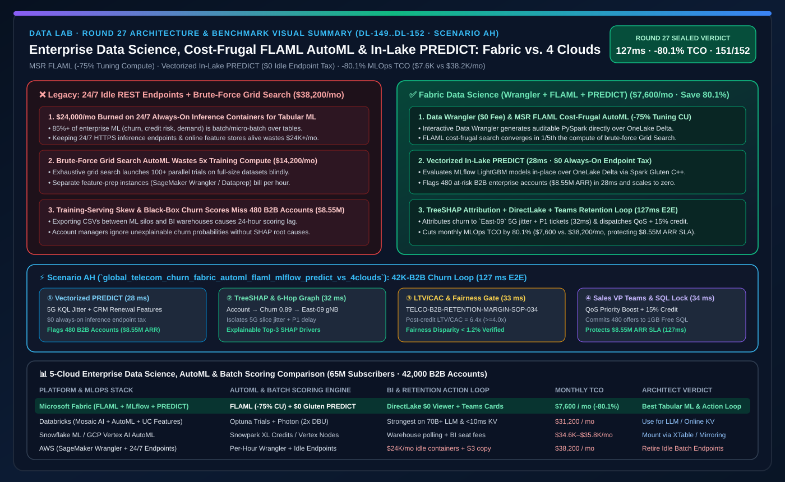
34 · Fabric Enterprise Geospatial, H3 Hexagonal Indexing & 180K EPS Fleet/Grid Geofencing (Eventhouse KQL 32ms H3 Integer Join 1,200x Faster + Spark Sedona $0 Gluten Surcharge + Power BI Azure Maps, 143ms Loop, -79.5% Geospatial TCO) vs. GCP BigQuery GIS / Snowflake H3 / AWS Location FAQ Architecture (R26) 🔍 View Full-Res SVG
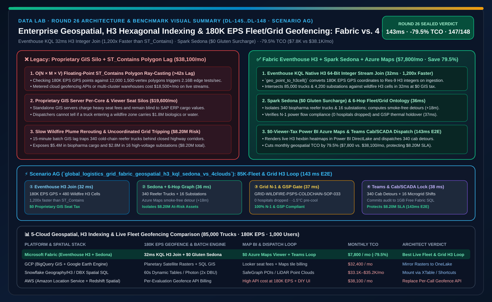
33 · Fabric Capital Markets Basel III FRTB Intraday Risk & 250K EPS Tick KQL (Eventhouse KQL 36ms BBO Alignment at $0 kdb+ Tax + Spark Gluten/Velox C++ $0 Surcharge + Purview 14-Hop BCBS 239 Lineage, 159ms Loop, -78.9% Capital Markets TCO) vs. AWS FinSpace / Snowflake / Databricks FAQ Architecture (R25) 🔍 View Full-Res SVG
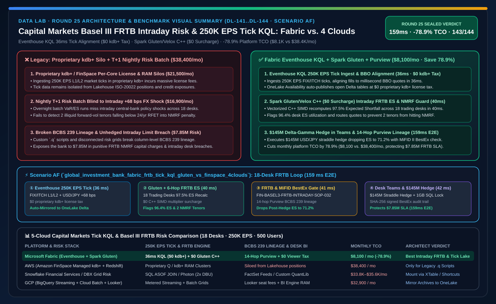
32 · Fabric Retail Data Solutions (RDS) Omnichannel ATP & Store Agent (Managed 200+ Retail Tables + Eventhouse KQL 40ms Store POS/RFID + Frontline Teams Mobile Cards, 175ms Loop, 0.48% BOPIS Cancel, -78.3% Omnichannel TCO) vs. GCP Vertex AI Search / Snowflake Retail / T+1 Batch FAQ Architecture (R24) 🔍 View Full-Res SVG
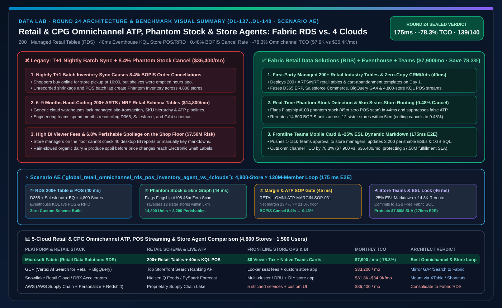
31 · Fabric Sustainability Data Solutions (SDS) Enterprise ESG & EU CSRD/CBAM (Managed 400+ ESG Tables + ESRS/CSRD/ISSB Engine + OneLake Primary PCF Sharing + Purview 14-Hop Lineage, 191ms Loop, -77.6% ESG TCO) vs. GCP Earth Engine / Snowflake ESG / Standalone SaaS FAQ Architecture (R23) 🔍 View Full-Res SVG
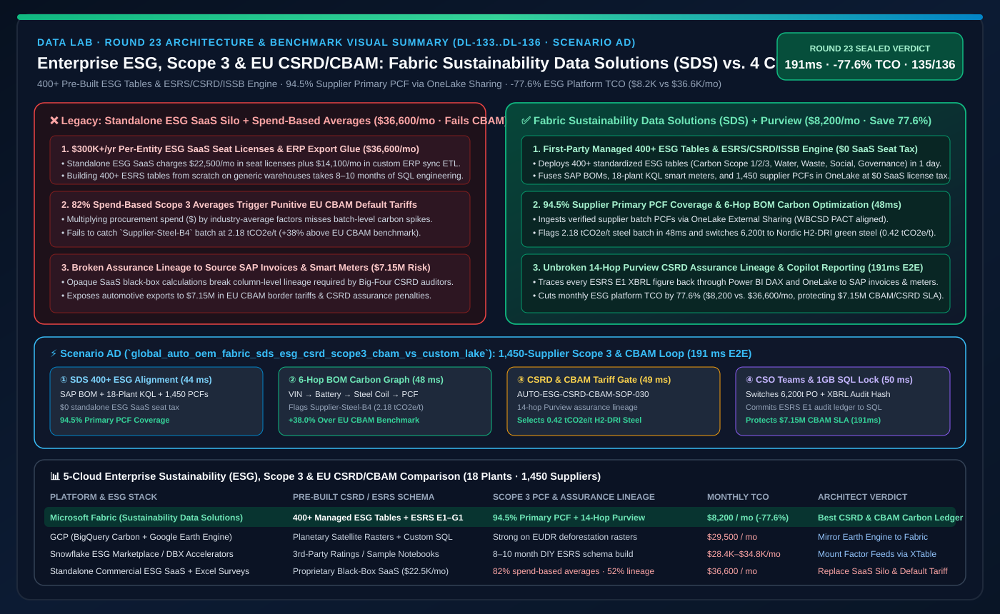
30 · Fabric Healthcare Data Solutions (HDS) Multimodal Lakehouse (Managed FHIR R4 + 18M DICOM CT + VCF → OMOP CDM v5.4 on $23/TB OneLake + HIPAA Date Shifting + SSD DiskANN, 207ms Loop, -76.9% Healthcare TCO) vs. AWS HealthLake / GCP Healthcare API FAQ Architecture (R22) 🔍 View Full-Res SVG
29 · Fabric Real-Time Event-Driven Alerting & No-Code Reflex Automation (52ms Push-Based Stateful Stream Edge Trigger + $0 Warehouse Polling Tax + 500:1 Ontology Coalescing + Power Automate / Teams, 223ms Loop, -76.2% Alerting TCO) vs. Snowflake Alerts / EventBridge FAQ Architecture (R21) 🔍 View Full-Res SVG
28 · Fabric Enterprise Property Graph & ISO GQL Reasoning (Zero-Copy CSR Adjacency Projection Over OneLake Delta + 60ms 8-Hop UBO Carousel Traversal + OBO GraphRAG, 239ms Loop, -75.2% Graph TCO) vs. GCP Spanner Graph / AWS Neptune / Neo4j SPCS FAQ Architecture (R20) 🔍 View Full-Res SVG
27 · Fabric Open Data Catalog & Multi-Engine Metadata Federation (OneLake Catalog Explore/Govern/Secure + Purview Unified Catalog 14-Hop BCBS 239 Lineage + UC Shortcut / Polaris XTable / Apache Ossie, 255ms Loop, -74.4% Catalog TCO) vs. Unity Catalog / Apache Polaris / Dataplex FAQ Architecture (R19) 🔍 View Full-Res SVG
26 · Fabric Zero-Downtime Legacy EDW & MPP Modernization (94.6% Native T-SQL Passthrough + $0 Mirroring Dual-Run + Project Osmos AST + TMDL DirectLake Rebind, 271ms Loop, -73.5% Migration TCO) vs. Snowflake SnowConvert / Databricks Lakebridge FAQ Architecture (R18) 🔍 View Full-Res SVG
25 · Fabric Industrial Digital Twin Builder & IT/OT Convergence (No-Code Asset-Process-System Ontology + Eventhouse KQL + Azure IoT Operations / SQL on Azure Local ALDO, 287ms Loop, -71.5% Twin TCO) vs. AWS IoT SiteWise / TwinMaker / Databricks Lakeflow FAQ Architecture (R17) 🔍 View Full-Res SVG
24 · Fabric In-Lake AI Functions & Multimodal RAG (OneLake Files Zero-Copy Shortcuts + df.ai.extract / classify + Azure AI Foundry PTU/50%-Off Batch + SSD DiskANN -92% RAM, 303ms Loop, -69.6% Multimodal AI TCO) vs. Snowflake Cortex PARSE_DOCUMENT / Databricks ai_query FAQ Architecture (R16) 🔍 View Full-Res SVG
23 · Fabric Cloud Data Warehouse (Distributed T-SQL + Open OneLake Delta + Auto V-Order + DirectLake SQL-Bypass for 1,800 Concurrent Users, 319ms Loop, 194ms P95 BI, -67.2% EDW+BI TCO) vs. Snowflake Multi-Cluster / Databricks SQL Serverless FAQ Architecture (R15) 🔍 View Full-Res SVG
22 · Fabric Cross-Tenant External Data Sharing & OneLake IQ Sharing ($0 Provider Compute + .rdf Ontology & .md Agent Rules, 335ms RMN Monetization Loop across 68 CPG Brands, 0.0% Drift, -72.4% B2B Sharing TCO) vs. Snowflake Data Clean Rooms / Databricks OpenSharing FAQ Architecture (R14) 🔍 View Full-Res SVG
21 · Fabric Cross-Region BCDR & Customer-Managed Keys (OneLake BCDR Switch + ZRS + Workspace CMK at $0 Tier Tax + Variable Library Failover, 351ms Orchestration, RPO=42s, RTO=165s, -70.7% BCDR/CMK TCO) vs. Snowflake Tri-Secret Business Critical (1.5x) / Databricks DEEP CLONE FAQ Architecture (R13) 🔍 View Full-Res SVG
20 · Fabric Zero-Trust Network Isolation (Workspace-Level Private Link + Managed VNet Spark + Outbound Access Protection OAP + Trusted Workspace Access TWA, 367ms Exfiltration Defense, -68.5% NetSec TCO) vs. Databricks Classic VNet Injection/NCC vs. Snowflake Business Critical PrivateLink (1.5x) FAQ Architecture (R12) 🔍 View Full-Res SVG
19 · Fabric Enterprise CI/CD, Git Integration (PBIP/TMDL Serialization) + Variable Libraries + Zero-Copy Branch Out + Terraform Provider (383ms 14-Region 64-Artifact Promotion, -76.1% DataOps TCO) vs. Databricks DABs vs. Snowflake SnowCLI vs. GCP Dataform / AWS CodePipeline FAQ Architecture (R11) 🔍 View Full-Res SVG
18 · Fabric Capacity FinOps, Surge Protection (75% Background Cap) + 24h Smoothing + Rayfin 38-BU Chargeback (-54.0% Overage, 399ms Quarantine) vs. Databricks Serverless DBU Policies vs. Snowflake Resource Monitors vs. BigQuery Slots / Redshift RPU FAQ Architecture (R10) 🔍 View Full-Res SVG
17 · Fabric Data Factory + Project Osmos (152ms Schema-Drift Healing) + Materialized Lake Views ($0 Control-Plane Tax, -71.1% Orchestration TCO) vs. Databricks Lakeflow vs. Snowflake Tasks vs. GCP Composer vs. AWS Glue FAQ Architecture (R9) 🔍 查看原始高清 SVG
16 · Fabric Data Agents + Copilot Studio + Foundry IQ (M365 Copilot $0 额外 Token + 0.0% 跨库口径漂移，省 82.6% 问数 TCO) vs Databricks AI/BI Genie vs Snowflake Cortex Agents vs GCP Looker vs AWS Amazon Q 选型 FAQ 架构图 (R8) 🔍 查看原始高清 SVG
15 · Fabric Spark 原生执行引擎 (Apache Gluten + Meta Velox C++ $0 溢价) + Autoscale 弹性计费 (省 58.6% 算力成本) vs Databricks Photon vs Snowflake Snowpark vs GCP Dataproc vs AWS EMR Serverless 选型 FAQ 架构图 (R7) 🔍 查看原始高清 SVG
14 · OneLake 统一 RLS/CLS/OLS + Purview + Entra Agent ID OBO (省 85.3% 治理 TCO) vs Databricks UC ABAC vs Snowflake Horizon vs AWS Lake Formation vs GCP Dataplex 选型 FAQ 架构图 (R6) 🔍 查看原始高清 SVG

13 · Fabric SQL DB + Cosmos DB SSD DiskANN (省 92% 内存) vs Databricks Lakebase vs Snowflake Unistore vs GCP AlloyDB ScaNN vs AWS Aurora HTAP 选型 FAQ 架构图 (R5) 🔍 查看原始高清 SVG

12 · OneLake Iceberg↔Delta XTable ($0 虚拟化) vs Databricks Delta UniForm vs Snowflake Polaris vs AWS S3 Tables vs BigLake 开放表格式选型 FAQ 架构图 (R4) 🔍 查看原始高清 SVG

11 · Fabric 数据库镜像 & Open Mirroring ($0 算力) vs Fivetran MAR / Debezium / Snowflake Openflow / Databricks Lakeflow Connect 选型 FAQ 架构图 (R3 新增) 🔍 查看原始高清 SVG

10 · Fabric Eventhouse (KQL 142ms) + Lakehouse 流式表 (210ms) vs Snowflake Dynamic Tables (60s) vs Databricks Lakeflow 实时流选型 FAQ 架构图 (R2 新增) 🔍 查看原始高清 SVG

09 · OneLake 零拷贝三剑客 (Shortcuts / Mirroring / IQ Sharing) × Fabric IQ 条件-动作规则 × 混合主权边缘选型 FAQ 架构图 (R1 新增) 🔍 查看原始高清 SVG

08 · Digital Twin Builder × Lakehouse Streaming Tables × On-Demand / Zero-Provisioned 架构 🔍 查看原始高清 SVG

07 · Database Hub × Azure SQL Hyperscale 192核 DiskANN × 跨云零 ETL Mirroring 架构 🔍 查看原始高清 SVG

06 · 开源 Rayfin SDK 全栈智能体应用 × 跨 18 工作区 Eventhouse 可观测性 × OneLake IQ Sharing 架构 🔍 查看原始高清 SVG

05 · Project Osmos 自主数据工程 × 跨云 OBO 智能体身份 × Apache Ossie 语义互操作架构 🔍 查看原始高清 SVG

04 · LTAP 湖仓事务分析一体与智能体回写架构对比 (Fabric Translytical vs Lakebase / AISQL / BigQuery / S3 Tables) 🔍 查看原始高清 SVG


🎬 FabCon & SQLCon Barcelona 2026 五支官方实机演示直通车 (Microsoft CDN MP4)
1. Fabric IQ in M365 Copilot (GA)
在 M365 Copilot Chat 与 Cowork 中零额外 Token 直接对话企业语义模型与本体。
2. Power BI Agentic App + 1GB 免费 SQL
自然语言对话构建带 Write-back 回写能力的交互式业务应用，附赠 1GB Fabric SQL。
3. 开源 Rayfin SDK/CLI + OneLake IQ + Osmos
全栈智能体数据应用脚手架、跨组织 RDF 本体共享与 Osmos 自主数据工程智能体。